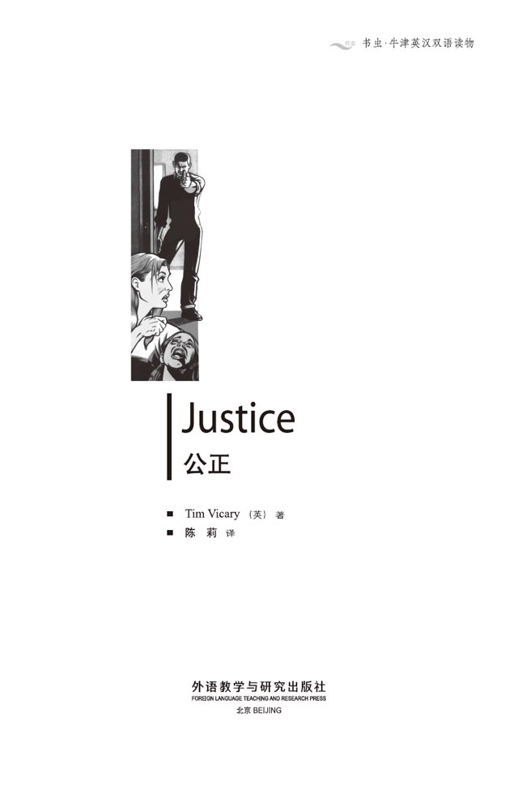
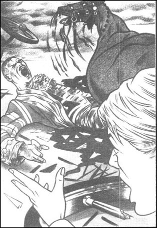
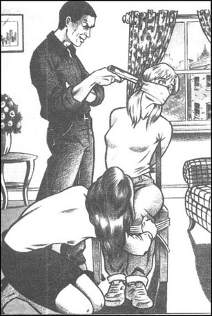
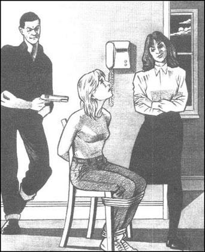
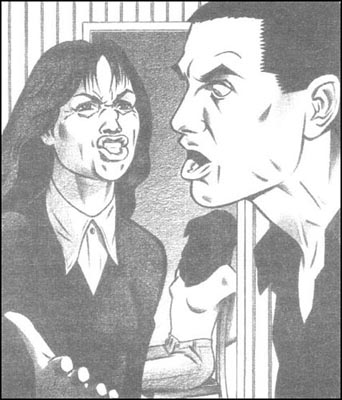
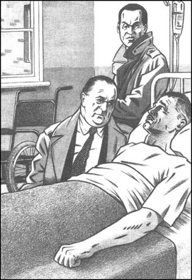
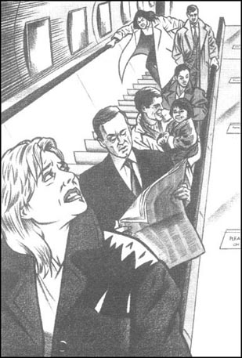
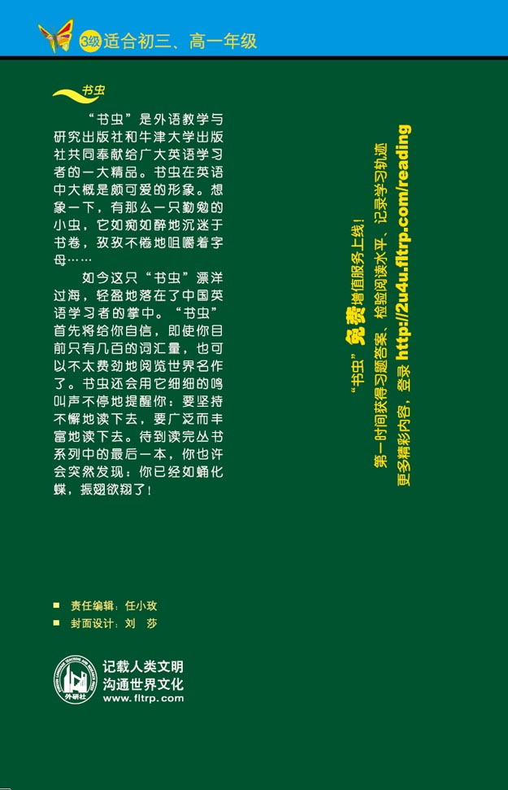

扉页

版权页
京权图字01-97-0328
Originally published by Oxford University Press, Great Clarendon Street, Oxford. ©1995
This edition is licensed for sale in the People's Republic of China only and not for export therefrom.
'Oxford' is a registered trademark of Oxford University Press.
图书在版编目（CIP）数据
公正 = Justice / （英）维卡里（Vicary, T.）著；陈莉译．—北京：外语教学与研究出版社，1998（2015.2 重印）
(书虫·牛津英汉双语读物）
ISBN 978-7-5600-1378-7
Ⅰ．公… Ⅱ．①维…②陈… Ⅲ．小说—英国—对照读物—文学—英、汉 Ⅳ．H319.4：I
中国版本图书馆CIP数据核字（98）第07713号
出版人： 蔡剑峰
责任编辑：任小玫
出版发行：外语教学与研究出版社
社 址：北京市西三环北路19号（100089）
网 址：http://www.fltrp.com
版 次：1998年8月第1版
书 号：ISBN 978-7-5600-1378-7
* * *
凡侵权、盗版书籍线索，请联系我社法律事务部
举报电话：（010）88817519
电子邮箱：banquan@fltrp.com
法律顾问：立方律师事务所 刘旭东律师
中咨律师事务所 殷 斌律师
目录
简介
简 介
恐怖分子不在乎杀害谁或伤害谁；对别人是否公正他们并不感兴趣，他们感兴趣的只是炸弹、枪枝、杀人，然后如何逃脱法律责任。但是在有警察、法律和监狱以前，人们用一种更古老的方法来讨回公道，那就是以眼还眼，以牙还牙，以命抵命……
国会大厦门外，一颗炸弹在女王乘坐的马车里爆炸，炸死了五人，可偏偏没炸着女王。简·科尔正在观望的人群中。她惊恐地推开惶恐的人群寻找着为女王驾车的父亲。她看到他正躺在血泊中痛苦地呻吟着。
阿兰·科尔没有死，但他失去了一条腿。而且他和女儿的危难才刚刚开始，因为他知道恐怖分子的一些事情。尽管当时他还不知道这点，但很快他就意识到了。
然而，在某个地方，某个人正急切地想阻止阿兰讲明真相……
本书作者蒂姆·维卡里是一位很有经验的教师和作家。他已为牛津出版社写了许多故事，而且还出版了两本小说：《红玫瑰上的血》及《猫和老鼠》。他现在居住和工作在英格兰北部的约克。
1．Bomb
1
Bomb
'Look!' Jane Cole said. 'Here she comes now!'
The two Americans looked along the street. There were crowds of people everywhere. In the middle of the road, soldiers were riding towards them on horseback. Behind them came a golden coach, pulled by six black horses.
'That's my father,' Jane said. 'He's the coachman — the man driving the horses. '
The American woman said, 'Fantastic! Your father's driving the Queen! Quick, Harry, use the video camera!'
'I am using it!' her husband said. 'But she's too far away. Can't we get a little nearer, Jane?'
'We can try,' Jane said. 'Follow me!' She took them nearer to the entrance to Parliament. 'This is where the coach will stop and the Queen will get out. Then she'll go upstairs to open Parliament for this year.'
'Didn't someone put a bomb under your Parliament once?' the American man asked. 'I read about that at school. Guy... something?'
'Guy Fawkes,' Jane said. 'In 1605. He tried to blow up Parliament, that's right. But don't worry. There's no Guy Fawkes here today.'
She smiled at the Americans. She was a student, and this was her part-time job—to show tourists round London. She felt proud to show them her father, driving the Queen on a wonderful day like this.
Then the Queen's coach came past in front of them, the golden roof bright in the sunlight.
There were people everywhere, trying to take photos. Jane saw a woman with red-brown hair behind the American man, pressing the button of her camera. That's stupid, Jane thought, she can only see the backs of people's heads there. The woman shook her camera angrily; there seemed to be something wrong with it. The American woman pulled Jane forward, laughing happily. 'Come on,' she said, 'let's get to the front! Use that video, Harry!'
Alan Cole stopped the coach outside Parliament, and sat there, quietly holding the horses. A man opened the coach door, and Prince Charles and the Duke of Edinburgh got out. Then the Queen got out. She was wearing a long white dress, and carrying a gold handbag. She walked slowly towards the entrance to the building.
'Excuse me, please,' the woman with red-brown hair said. 'I must get closer.' She pushed past Jane and held out her small black camera.
'Oh, all right,' Jane said. 'But... my God!'
There was a loud BANG! Jane saw a bright white light in front of her eyes, and felt a terrible hot wind on her face. The wind threw her backwards, and she fell to the ground with a lot of other people. For a moment she lay there, not thinking, not seeing.
Her eyes were open but she saw nothing. Only... blue sky. She heard nothing. Only... silence. Her body felt no pain. But she could smell something. Smoke.
Smoke? she thought. I don't understand. Why smoke? And this blue sky. Where am I?
Then the screaming began.
The screaming was high and loud and terrible. It didn't sound human. It went on and on and on.
Jane saw a hand in front of her, on the ground. A man's hand with blood on it. And broken glass. She moved her head and saw broken glass everywhere, and blood, and bodies lying on the ground. She stood up slowly.
For a moment she thought everyone was dead. There were bodies everywhere, but no one was moving. Then a man ran across the road, and one of the bodies moved.
The body wasn't human; it was a horse. As it moved, it screamed. The horse tried to stand up, but it couldn't, because it only had three legs. There was blood all round the horse, and a big bit of wood in its stomach.
The Queen's coach was broken into a thousand pieces, and there were bits of wood and clothes and bodies everywhere. The bodies looked like broken dolls.
'Dad!' she screamed. 'Oh God — my father!'
She ran quickly towards the coach. A policeman with a bloody hand tried to stop her, but she pushed him away.
'My father's over there!' she screamed.
At first she couldn't find him. There were so many bodies—and so much blood! She saw the horse in the middle of a great lake of blood, trying to get up on its front leg. There was blood coming from the horse's nose and stomach — and under the back legs, something that looked like...
A body. A man. ' Father!'
Alan Cole was covered with blood and his face was as white as paper. When he saw Jane, he opened his eyes and screamed. 'It's my leg! My leg—get this horse off me!'
His leg was under the back of the horse, which was moving wildly, trying to get up. Each time the horse moved, it fell on Alan Cole's leg, and he screamed.
Jane ran and pushed the horse but it was too big, too heavy. She pulled its tail but that was no good. It tried to get up and fell on her father's leg again, twice. She could hear his bones breaking. Then a policeman came and held the horse's leg. Jane held its tail, and another policeman held Alan's arms. Jane and the first policeman pulled the horse to one side, while the second policeman pulled Alan free. The horse screamed, kicked Jane on the shoulder, and died.
Jane went in the ambulance with her father to the hospital. There were lots of people there. She heard a reporter talking on the telephone to his office.
'Five,' he said. 'Five dead, and about thirty are very badly hurt. It was a bomb—it must be terrorists. But the Queen is safe. She was inside Parliament with her husband and Prince Charles and...'
'Never mind the bloody Queen!' Jane thought. 'What about my father?'
The doctors took Alan away from Jane, and she had to sit and wait. Her shoulder was hurt, but not badly. For nearly four hours she walked up and down, drank coffee, and thought: why?
Why try to kill the Queen—how will that help anyone? Why kill tourists and soldiers outside Parliament? Why try to kill my father?
Jane's father was the most important person in the world to her. When he was a soldier, she had travelled around the world with him. He had taught her to climb mountains, win judo fights, ride horses, sail boats — he was a great father. Now, she thought, he may be dead.
At midnight, a young Indian doctor came to see her. He was tired and serious. He looked at her sadly.
'It's bad news, isn't it?' Jane said. 'Is he dead?'
'No, Miss Cole,' the doctor said. 'We have saved your father's life. But I am afraid...' He hesitated.
'Yes? What then? Please — tell me!'
'I am afraid he has lost his leg. It was too badly broken — we had to cut it off.'
'Oh my God!' Jane sat down suddenly. 'You cut his leg off!' She stared at the doctor and thought: Dad will never be able to climb or ride or sail again. Oh, poor man! It's worse than being dead! She began to cry.
'I'm very sorry, miss,' the doctor said. 'We had to do it, to save his life. He'll get an artificial leg. He'll learn to use it. At least he's alive...'
'Yes, I suppose so.' Jane looked up. 'I'm sorry, doctor. I'm sure you did your best. Can I see him now?'
'Yes, of course. The nurse will show you...'
In the hospital bed, Alan Cole lay quietly. His face was as white as the sheets on the bed, but when Jane came in, he opened his eyes slowly. Jane took one of his hands in hers. The hand was cold, like ice.
'Janie? Are you all right?'
'Me? I'm fine, Dad. And you're going to be OK too, aren't you? The doctor told me.'
He closed his eyes, and for a long time he didn't answer. Perhaps he's asleep again, Jane thought. Then, very quietly, Alan Cole said, 'Stay with me, Janie.'
'Of course, Dad. I'm not going anywhere.' Jane sat down on a chair beside the bed. 'You sleep now.'
Her father closed his eyes, and the nurse smiled at Jane. 'Would you like a cup of tea, miss?'
'Yes, please,' Jane said. 'It's going to be a long night.' She held her father's hand, and watched him sleeping. He looks happy now, she thought. Like a baby.
But what will he say when I tell him about the leg?
Next day, the doctor told Alan about his leg. Jane sat by the bed and held his hand while he listened. He didn't say anything, but tears came into his eyes.
'I'm very sorry, Mr Cole,' the doctor said. 'But we had to do it. Your leg was broken in forty places, and you lost a lot of blood. You're lucky to be alive.'
'Lucky!' Alan Cole said angrily. 'With this? Damn it, man, I'll never walk again!'
'Oh yes, you will, Mr Cole. We'll get you an artificial leg. They're very good—they move like an ordinary leg. No one will see it under your trousers.'
'And will I be able to ride horses with it, or swim, or climb mountains?'
'Well, perhaps not...' The doctor hesitated. 'We'll do our best for you, Mr Cole, believe me. Now, here's something to help you sleep. You'll feel better later.'
All day, Jane waited in the hospital. She drank tea, read newspapers, had a meal, and held her father's hand as he slept. No one came to visit. Her mother was dead, and her brother lived in Australia. At four o'clock her father woke up, and looked at her with big frightened eyes.
'Janie?' he said.
'Yes, Dad.'
'What happened? The doctor said there was a bomb, didn't he? And I lost my leg. But... I can't remember.'
Very quietly, Jane told him what she had seen. Then she read the newspaper aloud.
Five people have died, and forty are in hospital. One man from the Queen's coach lost a leg, and the other three are dead. But the Queen, Prince Charles, and the Duke of Edinburgh were not hurt. Yesterday some Irish terrorists rang the BBC to say they exploded the bomb. 'We are sorry that ordinary people died,' they said. 'We meant to kill the Queen, not them. But accidents happen sometimes. The Queen was lucky this time, because the bomb exploded too late. But she has to be lucky every time. We only have to be lucky once.'
'My God!' Alan said. 'The bastards! Who... who died?'
'One policeman, a tourist, and three coachmen,' Jane said. 'You were the only coachman who didn't die.'
'Oh no.' Alan's eyes were filled with tears. 'George, Bernard, John—dead! What harm had they ever done to the Irish, or to anyone? Why did the Irish have to kill them with their bloody bomb? There's no justice in this life, is there?'
'Well, perhaps the police will...' Jane began.
'Yes, I hope they catch those murdering Irish bastards, I really do. I hope they lock them in prison until they die. That's what I hope. By God, I do!'
'Of course they will, Dad.' Jane stroked her father's hand softly. 'The police are out there now, looking for the bombers. They'll catch them, before too long.'
crowd n. a large group of people. 一群人。
coach n. a kind of car pulled by horses. 马车。
fantastic adj. wonderful. 奇妙的。
parliament n. the building where people discuss and make laws in a country. 国会。
press v. push steadily against. 按。
proud adj. feeling pleased about something you have done. 自豪。
scream v. cry or say loudly, especially because of fear or anger. 尖叫。
human n. 人类。
doll n. toy that looks like a child. 布娃娃。
kick v. hit something or someone with the foot. 踢。
shoulder n. 肩。
ambulance n. a special car for carrying people who are ill or wounded. 救护车。
terrorist n. someone who frightens, hurts, or kills other people in order to get sth. that he or she wants. 恐怖主义分子。
bloody adj. bleeding or covered in blood; also, a word used to show that you are angry. 血腥的；也可用为强势语。
judo n. 柔道。
serious adj. important because of possible danger. 严重的。
hesitate v. stop for a moment to show that you are not sure about what you are doing or saying. 犹豫。
stare v. look very hard at sth. for a long time. 盯着看。
artificial adj. not natural; made by people. 人造的。
suppose v. think. 想，认为。
Janie n. 简妮（人名Jane的昵称，常用于家人之间的对话中）。
tear n. water that comes from the eyes when you cry. 眼泪。
Damn it! 该死的！（感叹词，用以表示愤怒、厌烦、急躁等）。
explode v. 爆炸。
accident n. something which happens by chance. 意外事故。
bastard n. a bad or cruel person (usually a man). 混蛋（俚语）。
justice n. 公正。
stroke v. move your hand slowly and gently over something. 抚摸。
catch v. 抓获。
炸弹
1 炸弹
“看！”简·科尔说，“她来了！”
那两个美国人顺着街道看去。到处都是人群。马路中间，士兵正骑在马背上朝他们这边走来。在士兵们的后面，是一辆由六匹黑马拉着的金色马车。
“那是我父亲，”简说，“他是马车夫——就是赶马的人。”
那个美国妇女说：“真奇妙！你父亲正驾车拉着女王！快点，哈利，用摄像机拍下来！”
“我正在拍！”她丈夫说，“可她离得太远了。我们能再离得近些吗，简？”
“试试吧，”简说，“跟我来！”她带他们走到离国会大厦门口更近些的地方。“马车就停在这儿，女王从这儿下车。然后她上楼去召开今年的国会会议。”
“不是有人在你们的国会大楼下埋过炸弹吗？”那个美国男人问。“我在学校里读到过那事。是一个叫盖什么的人？”
“盖·佛克斯，”简说，“是在1605年。他试法要炸飞国会大厦，没错。但别担心。今天这儿没有盖·佛克斯。”
她朝这对美国夫妇笑了笑。她是个学生，而这是她的兼职工作——带游客们在伦敦观光。告诉别人她父亲在像今天这么令人羡慕的时候给女王驾车使她很自豪。
接着女王的马车从他们面前经过，金色的车顶在阳光下闪闪发光。
到处都是拿着照相机想照相的人。简看见在美国男人身后有一个长着棕红色头发的女人，她正按下照相机的快门。那样做可真傻，简想，她在那儿只能照到那儿的人们的后脑勺啊。那女人生气地摇晃着照相机，照相机好像出了什么毛病。那个美国女人往前拉着简，高兴地笑着。“走啊，”她说，“咱们上前边去。哈利，用摄像机拍一下！”
阿兰·科尔把马车停在国会大厦门前，坐在那儿，静静地把住缰绳。一个男人打开马车门，查尔斯王子和艾丁堡公爵走出马车。接着女王也走了出来。她穿着一件长长的白色连衣裙，手中拿着一个金色提包。她慢慢走向大楼门口。
“劳驾，”留着棕红色头发的女人说，“我得靠近些。”她推开简往前走着，举着她那个黑色小相机。
“噢，可以，”简说，“可是……天啊！”
“砰”的一声巨响！简看到眼前闪过一道白光，感到一股难忍的热气扑面而来。热浪把她抛向后面，她和许多其他人一起摔倒在地。片刻间她躺在那儿脑中一片空白，眼前一片漆黑。

她睁开眼睛，可眼前除了蓝天什么也看不见；耳边除了一片寂静什么也听不到。她感觉不到身体的疼痛，可她能闻到一股味儿。是烟味。
烟？她想，我不明白，为什么会有烟？天这么蓝。我在哪儿？
紧接着人们的喊叫声开始响起来了。
这喊叫声又尖又响，很痛苦似的。真不像是人所能发出的声音。还一直响个不停。
简看到眼前的地上有一只手。是男人的一只血淋淋的手。还有碎玻璃。她挪了挪脑袋，看到地上到处是碎玻璃、鲜血和尸体。她慢慢地站起身来。
片刻间，她以为所有的人都死了。因为周围到处是躯体，但又都一动不动。接着一个男人跑过街道，而后又有个东西动了起来。
动起来的不是人而是马。它一边动着，一边嘶鸣着。它想站，可站不起来，因为它只剩三条腿了。它浑身都是血，肚子上还插着一大块木头。
女王的马车被炸得粉碎，到处都是碎木头、破布条和碎尸块。那些尸体就像是破了的布娃娃。
“爸爸！”简尖叫着，“噢，上帝啊——爸爸！”
她飞快地向马车跑去。一只手满是血的警察想拦住她，可被她推开了。
“我父亲在那边呢！”她尖叫着。
开始她找不到他。太多的尸体——而且太多的鲜血！她看到正躺在一大片血泊中的那匹马，它正挣扎着想用前腿站起来。血从它的鼻子和肚子里流淌下来——而在它那黑色的腿下，好像有什么东西，是……
是一个人，一个男人。“爸爸！”
阿兰·科尔浑身是血，脸苍白得像一张白纸。他看到简时睁大眼睛，叫道：“我的腿！我的腿——把这马从我身上推开！”
阿兰的一只腿压在马背下，那匹马正疯狂地挪动着想站起来。马每动一下，都要压一下阿兰的腿，于是他直叫唤。
简跑过去推那匹马，可是它太大，太重。她又去拽马尾巴，可一点用都没有。它两次想要站起来，可又都摔在了她爸爸身上。她听见他的骨头都断了。那时，一个警察过来并抓住马的一条腿。简拽住马尾，另一个警察抓紧阿兰的胳膊。简和第一个警察把马拽到一边，第二个警察把阿兰拖了出来。那匹马嘶叫着，踢了简的一个肩膀一下，然后就死了。
简随爸爸上了救护车到达医院。那里有很多人。她听到一个记者正在给办公室打电话。
“五个，”他说，“五人死亡，大约三十人受重伤。是一枚炸弹——一定是恐怖分子干的。但女王安然无事。她当时在国会大厦里，与她在一起的有她的丈夫、查尔斯王子及……”
“女王怎么样无所谓！”简想，“我父亲怎么办？”
医生们从简身边抬走阿兰，她只好坐在那儿等。她的肩膀有些疼，但不很严重。大约有四个小时，她就这样走来走去，喝咖啡，思考着：这是为什么？
为什么要杀女王——那样对谁有什么好处吗？为什么要杀国会大厦门前的游客和士兵？为什么要杀我父亲？
对于简来讲，父亲是世界上最重要的人。在他当兵的时候简就跟着他周游世界。他教她爬山、柔道、骑马、扬帆开船——他是个了不起的父亲。现在，她想，他可能就要死了。
午夜，一位年轻的印度医生来看她。他看上去很疲劳也很严肃。他悲伤地看着简。
“是坏消息，对吗？”简问，“他死了？”
“不，科尔小姐。”医生说，“我们已经救活了你父亲。但恐怕……”他犹豫道。
“嗯？怎么样呢？劳驾——请告诉我吧！”
“恐怕他的腿保不住了。伤得太厉害——我们不得不锯掉它。”
“噢，天啊！”简一下坐在椅子上，“你们锯了他的腿！”她盯着医生想：爸爸再也不能爬山，再也不能骑马，再也不能扬帆开船了。噢，可怜的人！这比死了还难受！她哭了起来。
“实在对不起，小姐。”医生说，“为了救他的命，我们不得不这样做。他会安条假腿。他会学会用它的。至少他还活着……”
“是啊，我想是这样的。”简抬起头，“对不起，大夫。我确信你们已经尽力了。我现在能看看他吗？”
“当然可以。护士会带你去……”
病床上，阿兰·科尔静静地躺着。他的脸就像床单一样惨白。但当简进来时，他慢慢睁开双眼。简拉起爸爸的一只手。那手冰凉冰凉的。
“简妮？你没事儿吧？”
“我？我很好，爸爸。您也会好起来的，不是吗？医生告诉过我的。”
他闭上眼睛，好长时间没有回话。也许他又睡着了，简想。接着，阿兰·科尔静静地说：“陪着我，简妮。”
“当然，爸爸。我哪儿也不去。”简坐在床边的一把椅子上，“您睡会儿吧。”
父亲合上了双眼；护士朝简笑了笑。“你想要喝杯茶吗，小姐？”
“好的，来一杯吧。”简说，“这一夜长着呢。”她握住爸爸的手，看着他睡着的样子。他现在看上去很快活，她想，就像孩子一样。
但是我跟他提起他的腿时他会说什么呢？
第二天，医生告诉阿兰他的腿的事情。他听的时候简就坐在旁边握着他的手。他什么也没说，但眼中涌出了泪水。
“实在抱歉，科尔先生，”医生说，“可我们只能这么做。你的腿断了40处，又失血过多。您能活下来已经是万幸了。”
“万幸？！”阿兰·科尔生气地说，“就这样？去他的吧，我再也走不了路了！”
“噢，不，科尔先生，你还能走路。我们会给你安一条假腿。非常好使——活动起来就像真的一样。谁也看不出来是假的。”
“那样我还能骑马、游泳或爬山吗？”
“这个嘛，也许不行……”医生犹犹豫豫地说，“不过我们会尽力为你做的，科尔先生，相信我。瞧，这是助你睡眠的东西。你会感觉好些的。”
简一整天都在医院里等着。她喝茶水，读报纸，吃了顿饭，父亲睡觉时她就拉着他的手。没有人前来探视。母亲已经去世了，哥哥住在澳大利亚。4点钟时，父亲醒了，用惊恐的大眼睛看着她。
“简妮？”他说。
“我在这儿，爸爸。”
“出了什么事？医生说有炸弹什么的，不是吗？还说我的腿没了。可是……我想不起来了。”
简静静地告诉他她看到的一切，然后大声念起报纸：
有五人死亡，40人住进医院。女王的马车上有一人失去了一条腿，另外三人死亡。但是女王、查尔斯王子和艾丁堡公爵都没有受伤。昨天，一些爱尔兰恐怖主义分子给BBC打电话说是他们引爆炸弹的。“我们对老百姓的死感到歉意。”他们说，“我们本想杀死女王，而不是他们。但有时事情会出意外。女王这次走运了，因为炸弹炸得太晚了。可她得次次都走运才行，我们只消走运不失手一次就行。”
“上帝啊！”阿兰说，“混蛋！谁……谁死了？”
“一个警察，一位游客和三个马车夫。”简说，“您是唯一活着的车夫。”
“噢，不。”阿兰眼中满是泪水。“乔治、伯纳德、约翰——死了！他们对爱尔兰人有什么伤害？或对任何人有什么伤害？爱尔兰人为什么要用他们那血腥的炸弹杀死他们？生活中不公平，不对吗？”
“是啊，也许警察会……”简开腔道。
“是的，我希望他们能抓住那些杀人的爱尔兰混蛋，我真这么希望。我希望把他们关在监狱里直到他们老死。那便是我所希望的。上帝啊，我多么希望能这样！”
“当然会的，爸爸。”简轻轻抚摸着爸爸的手说，“警察已经出动去搜查那些投炸弹者了。他们会抓住那些坏蛋的，用不了多久。”
2．Anna
2
Anna
That night Alan was moved to another hospital, where they would fit him with an artificial leg. Jane went with him and slept in a visitor's room there. In the morning she bought a newspaper. She was right about the police. 'They've got them, Dad!' she said. 'Read this!'
Police yesterday arrested two Irishmen who they think put a bomb in the Queen's coach last week. The police said, 'Last week the coach went to a factory in south London to have new wheels fitted, and we believe the bomb was placed in the coach there. The two Irishmen worked at this factory, and two days before the bombing, they went on holiday to Ireland. We think the bomb had a clock in it, which was meant to explode at eleven o'clock outside Parliament. Luckily for the Queen, the bomb exploded after she had left the coach.'
Alan Cole put the newspaper down slowly. He looked pleased. 'Thank God for that,' he said.
'But why did they want the bomb to explode outside Parliament?' Jane asked. 'The Queen was in the coach for twenty minutes—why not blow the coach up earlier?'
'I don't know. Perhaps they wanted good pictures on TV,' Alan said. 'It was lucky for the Queen. But not lucky for me, or for the poor people who were killed.'
'No.' Jane put her hand on her father's, and remembered those minutes outside Parliament. The American man using his video camera, and the woman with red-brown hair shaking her camera angrily. Then... she shut her eyes, and saw the smoke, and the horse screaming, and the blood and bodies everywhere...
What kind of people could do that?
'I suppose the terrorists watched it on TV,' she said. 'They were in Ireland when the bomb exploded.'
'I expect they did,' Alan said. 'I expect they were laughing as people died. But I'm pleased the police have caught them. Now perhaps they'll leave me alone.'
'Who? The police? Dad, what do you mean?'
Alan sighed. 'Well, yesterday they came to ask me about the night before the bombing. I went back to the Mews at about ten o'clock that night, you know, to look at a horse with a bad leg. I often do that. They asked if I saw anything strange, or looked at the coach.'
'And what did you tell them?'
Alan looked angry. 'What do you think, Janie? Of course I saw nothing strange! I was looking at the horse, not the coach. And we were only there half an hour.'
'We, Dad?' Jane asked. 'Was someone with you?'
Alan hesitated. 'Well, yes... a lady friend of mine, Anna. You haven't met her, Janie, but I've told her about you. She's nice, you'll like her. She sometimes comes to see the horses with me.'
Jane felt embarrassed. After her mother had died four years ago, Jane had lived at home with her father. Once, he had brought a woman home to the house, but Jane had had a terrible argument with her, and the woman had left. There had been no other women, until Jane left home to go to university. Now...?
Well, her father was an adult, of course he could have women friends. But Jane hated it. She had loved her mother too much. And she loved her father too.
'What kind of a woman is she?' she asked angrily.
He's my father, she thought—I don't want another woman taking him away from me.
'Tall. Pretty. Red-brown hair. She likes horses and... films. We go to the cinema a lot.'
'Is she in love with you?'
'Well... perhaps, Janie, I don't know. I've only known her a few weeks. You'll like her, Janie, she's good fun.'
Jane was still angry, she couldn't stop herself. 'Then why isn't she here? Why hasn't she come to visit you?'
Now Alan looked embarrassed. 'Well, I was going to ask you, Janie... she doesn't have a phone, you see, and... perhaps she thinks I'm dead, like the others. God knows what she'll think of a man with one leg, but I do want to see her... so I've written this letter. Could you post it for me, Janie? Please.'
Jane took the letter and read the address. Anna Barry, 14 Bowater Gardens, London NE11.
'Dad, your name was in the newspapers. This woman can read, can't she? She must know you're alive.'
'Yes, but... perhaps she doesn't know which hospital. I don't know. Janie, please—don't be difficult.'
'Have you told the police about this woman, Dad?'
'Not yet.'
'Why not? They'll ask her questions, won't they?'
Alan sighed. 'Yes, I suppose so. I warned her about that in the letter. Perhaps that's why she hasn't come. You see... it's a bit difficult, Janie. Anna has a husband... and so it will be embarrassing for her if he finds out about us. Perhaps the police will want to ask her husband questions, too, and then there'll be all kinds of trouble.'
'I see,' Jane said. She felt miserable. My own father, she thought, is in love with a married woman. Then she saw the tears in his eyes, and his tired white face; and felt angry with herself, not him. Why, she thought, shouldn't my father fall in love? It happens to everyone, and you can't always choose the best person. Now he's here with only one leg and I'm angry with him. I'm his daughter, I should help him! Perhaps this Anna really is a nice woman, with a cruel husband.
She smiled, and said, 'I'm sorry, Dad. Of course I'll post your letter. But... isn't it a bit dangerous, sending a letter? Her husband could read it.'
'No, it's OK. Bowater Gardens is just where she's living at the moment. It isn't her home. I don't know where her husband lives. I don't want to know.' He smiled and took her hand. 'She's a lovely woman, Janie, really she is. You'll like her if you meet her, you know.'
Outside the hospital, Jane walked slowly down the street. She felt sad, and a little lonely. I wish my mother was still alive, she thought. I wish Mum was alive now, sitting with Dad in the hospital. I don't want all these problems. Why does Dad need another woman?
Oh Mum, why did you die? I need someone to talk to.
She took the letter out of her pocket and looked at it. I wonder what this Anna Barry is like, she thought. Perhaps she is nice, like Dad says. Perhaps I could talk to her. Perhaps she really does love Dad; perhaps she can help me look after him.
But why hasn't she come to see him?
She looked at the address again. 14 Bowater Gardens, London NE11. That wasn't far from her own student flat.
Why not take the letter myself? she thought. Then, if this Anna opens the door, I can talk to her myself. If I meet her, at least I'll find out what she's like.
Jane put the letter in her bag and walked quickly to the underground station. Am I full of anger, she wondered, or hope?
14 Bowater Gardens was an old house in a quiet street in north London. Jane took the letter out of her bag, and rang the bell. Nothing happened.
Damn! she thought. She rang again. Still no answer. She tried the door, but it was locked. So she put the letter through the letter-box and turned away. Then she stopped.
I've come all this way to meet this woman, Jane thought, and I want to know what she's like. She's important to my father, so she's important to me. I'll wait.
As she stood there, a woman came out of the next-door house. She had grey hair and the kind of face that enjoys watching the neighbours and talking about them.
'They've gone; there's no use waiting,' the woman said. 'I saw you ring the bell so I came to tell you.'
'Are you sure?' Jane said. 'I was looking for Anna.'
'The girl with red hair? That's right, she did live here, but she moved out with her boyfriend two days ago. It was the morning of that terrible bomb—that's why I remember it. The house is empty now. I had a look through the windows, and they've taken everything.'
Boyfriend! So Anna had another lover, Jane thought. Not just Dad. My poor, poor father!
'Did you know them well?' the woman asked.
'No, not really,' Jane said. 'I just wanted to...'
'They were only here about three months,' the woman went on. 'They weren't very friendly. Never said good morning or anything like that. They were Irish, I think. Well, he was. There's a lot of Irish around here.'
Jane began to move away from the door, and the woman added, helpfully, 'Perhaps your friend will write to you.'
'Yes. Perhaps.' Jane smiled at her and walked sadly down the street.
So that was the kind of woman Anna was. She probably never loved my father at all, Jane thought. How am I going to tell him? Poor Dad! Perhaps I'll just say that I posted the letter, and not tell him that I came to the house and found out about her.
But Jane wasn't very good at lying, and she didn't want to look at her father's sad eyes and tired white face. Let him hope for a few more hours, she thought. I'll go home now and tell him something tomorrow.
She hadn't been back to her flat since the bombing. She loved having her own home. It was only one big bedroom really, with a small bathroom and a kitchen. But it was her own place; she could do what she liked there.
She shut the door, then took off her coat and threw it on the bed. Then she heard the bathroom door slowly open behind her. She jumped round, her heart beating fast with fear, and saw a woman standing in the doorway!
'Who the hell are you?' she screamed. A thief, she thought. Jane had learned judo from her father; she knew what to do. She grabbed the woman's arm and threw her towards the bed. But as the woman fell, she grabbed Jane's hair, pulling it forwards, to stop herself from falling. Jane screamed, and pushed a hand into the woman's face, harder and harder until her hair was free. Then she hit the woman in the face and the woman fell to the floor. Jane stepped back, looked at her, and saw...
A man coming out of the kitchen. He had cold grey eyes and a thin hard smile and worst of all he had a gun in his hand. He said, 'Don't.'
Jane stood still, shaking. 'Don't what?'
'Move. Or talk. Don't do anything.' The little black hole in the end of the gun watched her, like a cold eye.
The woman got up off the floor, pulled Jane onto a chair, and tied her hands behind her. Then Jane remembered that there were people in the other flats, and opened her mouth to scream. The man hit her in the face.
'Don't even think about it,' he said. He took a long piece of cloth out of his pocket and tied it twice round her head, covering her mouth and the lower part of her face. Jane felt her body shaking with fear. Who were these people? What did they want with her? She stared at the man's cold hard face, the woman's blue eyes and red-brown hair. She thought she had seen the woman before. But where?
The woman tied Jane's legs to the chair. The little black eye of the gun was only a few centimetres from her face. The man watched her and smiled. 'Just sit still and be sensible, little girl,' he said. 'Then perhaps you'll live a few hours longer.'
fit v. put into place. 安装。
arrest v. catch someone in the name of the law. 拘捕。
shut v. close. 关上。
expect v. feel sure that something has happened or will happen. 想，认为。
sigh v. breathe out slowly when you are sad, tired, etc. 叹气。
mews n. a building (in a town) for horses. 马厩。
embarrass v. 使尴尬。
argument n. 争吵。
pretty adj. (usually a lady or something) good-looking. 漂亮的。
miserable adj. very unhappy. 难受。
cruel adj. not kind; bringing pain or trouble to other people. 残酷的。
pocket n. small bag on your clothes for carrying things in. 口袋。
flat n. 公寓。
underground adj. below the ground. 地下的；n. the railway under the ground. 地铁。
empty adj. 空的。
helpfully adv. 有益地；有帮助地。
throw v. move your arm quickly to send sth. through the air. 扔。
grab v. take hold of something quickly and violently. 抓住。
tie v. fasten two things together with rope. 绑，捆。
shake v. move from side to side, up and down. 摇晃。
安娜
2 安娜
那晚，阿兰被转到另一家医院，他们要在那儿给他装一只假腿。简也跟着一起去了，在那儿的一间探视室里睡了一觉。早晨，她买了一张报纸。她对警察的猜测是对的。“他们已经抓住了那些人，爸爸！”她说道，“看这个！”
警方昨天抓获了两名被认为上周在女王马车中放炸弹的爱尔兰人。警方说：“上周那辆马车曾到伦敦南部的一家工厂安装新轮子，我们相信他们就是在那里安放炸弹的。那两名爱尔兰人在这家工厂工作，炸弹爆炸两天前他们却到爱尔兰度假去了。我们认为炸弹上安装了定时器，定在11点在国会大厦外爆炸。对女王来讲幸运的是，炸弹在女王离开了马车之后才爆炸。”
阿兰·科尔慢慢放下报纸。他看上去很高兴。“感谢上帝，”他说。
“但是他们为什么要让炸弹在国会外边爆炸呢？”简问，“女王在马车里待了20分钟——为什么不早点炸马车呢？”
“不知道，也许他们想让画面在电视上更好看些。”阿兰说，“对女王来说很幸运，可我却不走运，还有那些被炸死的人。”
“是啊。”简把手放在父亲的手上，回想起国会门外的那几分钟。那个美国男人用摄像机拍摄，那个长着棕红色头发的女人生气地摇着照相机。然后……她合上了双眼，仿佛看到了那浓烟，那马的嘶鸣声以及四处的鲜血和尸体……
会是什么样的人干的呢？
“我想恐怖分子已经在电视上看到了那场面。”她说，“炸弹爆炸时他们正在爱尔兰。”
“我想他们看了，”阿兰说，“我想人们死的时候他们正在笑。但我很高兴警察已经抓到了他们。也许他们现在可以让我清静一下了。”
“谁？警察吗？爸爸，您是什么意思？”
阿兰叹了口气道：“唉，他们昨天来问我爆炸前一天晚上的事。我那天晚上十点左右回到马厩，你知道，是去看看那匹坏了一条腿的马。我常那样做。他们问我是否看到有什么异常或是看没看过那马车。”
“那您跟他们说什么了呢？”
阿兰生气了。“你怎么想呢，简妮？我当然没看到有什么异常！我是去看马，又不是去看马车。而且我们就在那儿待了半个小时。”
“我们，爸爸？”简问道，“有别人和您在一起吗？”
阿兰犹豫了一下。“啊，是啊……我的一个女朋友，安娜。你还没见过她，简妮，但我已经跟她提起过你了。她很好，你会喜欢她的。她有时和我一起去看马。”
简感到不太自然。四年前妈妈去世以后，她和爸爸住在家里。爸爸曾带回家一个女人，但简和那女人大吵了一顿，那女人就走了。从那以后就再也没有女人来过，直到简离开了家去上大学。现在……？
然而，父亲是大人，当然可以有女朋友。但简不喜欢。她太爱母亲，也爱父亲。
“她是什么样的女人？”她不高兴地问。
他是我的父亲，她想——我不想让别的女人把他从我身边抢走。
“高个儿。很漂亮。棕红色的头发。她喜欢马和……电影。我们经常一起去看电影。”
“她和您在恋爱吗？”
“啊……可能吧，简妮，我不知道。我刚认识她几个星期。你会喜欢她的，简妮，她很有意思。”
简还是不高兴，她无法控制自己的情绪。“那么她为什么没来这儿？她为什么没来看您呢？”
阿兰现在看上去很尴尬。“哦，我正想请你简妮，……你看，她没有电话，而且……也许她以为我已经死了，就像别人一样。上帝知道她会怎么看待一个只有一条腿的男人，但我真的想见她……所以我写了这封信。你能帮我寄这封信吗，简妮？劳驾了。”
简拿过信看了看地址：安娜·芭瑞，堡渥特花园14号，伦敦NE11。
“爸爸，您的名字登在报纸上。这个女人认得字，对吧？她应该知道您还活着。”
“是啊，可是……也许她不知道我在哪家医院。我不知道。简妮，请——，别太难说话了。”
“您和警察谈起过这个女人吗，爸爸？”
“还没有。”
“为什么没有？他们会问她一些问题，是不是？”
阿兰叹气道：“是啊，我想是。我在信中警告她了。也许这就是她不来的原因。你知道……事儿有点儿困难，简妮。安娜有丈夫……所以要是她丈夫知道了我们的事儿，她会很难堪。也许警察也会问她丈夫一些问题，那就会有各种各样的麻烦。”
“我明白了，”简说。她感到很难过。我父亲爱上了一个有夫之妇，她想。接着，她看到父亲眼中的泪水和他那苍白而疲惫的面孔；于是她生自己的气，不再怪父亲了。为什么爸爸就不能恋爱？她想。每个人都会恋爱，不可能谁都能选择最好的人。现在他在这儿，只剩一条腿了，可我却生他的气。我是他女儿，我应帮他！也许这个安娜真是个有个残酷的丈夫的好女人。
她微笑着说：“对不起，爸爸。我当然会帮您寄信的。但是……寄信不是有点儿不安全吗？她丈夫会看到的。”
“不，没事的。堡渥特花园只是她现在住的地方，不是她的家。我不知道她丈夫住哪儿。我不想知道。”阿兰微笑着，并握住简的手。“她是个很可爱的女人，简妮，真的。你见到她时会喜欢她的，你知道。”
医院外面简慢慢地沿着马路走着。她感到伤心，还有点儿孤独。我真希望妈妈还活在世上，她想，要是妈妈还活着，就坐在医院里爸爸身边多好啊！我不想有这些问题。为什么爸爸还需要另一个女人呢？
噢，妈妈，您为什么要死呢？我真想和某个人能说说心里话。
她从口袋里掏出那封信并看了看。我不知道这个安娜·芭瑞什么样，她想着。也许真像爸爸说的那样她的确很好。也许我能对她谈谈。也许她真的爱爸爸；也许她真的可以帮我照顾爸爸。
但是她为什么不来看爸爸呢？
她又看了一遍地址：堡渥特花园14号，伦敦NE11。离她自己的学生公寓不太远。
为什么不亲自送去呢？她想。那样，如果安娜出来开门，我就可以亲自跟她说话了。要是我见着她，至少可以知道她是什么样子。
简把信放回包里，快速走向地铁站。她问自己：我是满怀怨恨呢，还是满怀希望？
堡渥特花园14号是伦敦北城的一条安静的街道上的一座老房子。简掏出信，按了按门铃。可什么也没有发生。
该死！她想。她又按了一次。还是没有人。她试着推了推门，可门锁着。于是她把信塞进信箱，转身要走。接着她又停了下来。
我来这儿就是为了见这个女人，简想，想知道她是什么样。她对我父亲很重要，所以对我很重要。我等她吧。
她正站在那儿时，从邻居家出来一位妇女。这位妇女长着灰色的头发和一张可以看出她是那种爱打听邻居的事并议论他们的人的脸。
“他们已经走了，你在这儿等也没用。”那女人说，“我看见你在按门铃，所以来告诉你。”
“你肯定吗？”简说，“我找安娜。”
“长着红头发的那个女孩？没错，她在这儿住过，但两天前就和男朋友搬走了。就是爆炸那天早晨——所以我记得这事。现在屋子已经空了。我从窗子往里看过，他们把所有的东西都带走了。”
男朋友！那么说安娜还有一个情人，简想，不止是我爸爸！我可怜的爸爸！
“你和他们熟吗？”女人问。
“不，真不熟。”简说，“我只是想……”
“他们才在这儿住了三个月左右，”那女人接着说，“他们不太友好。从不说早晨好或那一类的话。我想他们是爱尔兰人。对，那个男的是。这儿周围有很多爱尔兰人。”
简开始往门远处走；那女人想帮帮她，就又加了一句：“也许你的朋友会给你写信。”
“是的，也许会。”简朝她笑了笑，而后惆怅地沿街走着。
那么说安娜就是那种人。她可能从没爱过父亲，简想。我怎么告诉他呢？可怜的父亲！要不我只告诉他我已经把信寄了，不告诉他我已经来过而且知道她是个什么人。
但是简不太会说谎，而且她也不想看父亲那双悲伤的眼睛和那张疲惫而苍白的脸。让他再盼几个小时吧，她想，我现在先回家，明天再告诉他这事。
自从爆炸事件后，她还没回过自己的公寓。她喜欢拥有自己的家。其实她这个小公寓只有一间大卧室，外带一个小卫生间和一个厨房。但这是她自己的地方，她在那儿可以干自己喜欢干的事。
她关上门，然后脱下大衣并把它扔到床上。接着，她听见卫生间的门在身后慢慢地开了。她跳转过身来，吓得心怦怦直跳，看到一个女人就站在门口！
“你到底是谁？”她惊叫道。是个贼，她想。简跟父亲学过柔道，她知道该怎么办。她抓住那女人的胳膊，把她掷向床头。可那女人为了不摔倒，往下倒时抓住了简的头发，把它向前拉扯着。简尖叫着，一只手拽着那女人的脸，越来越使劲地拽着，直到她的头发被松开了。然后简一掌打在那女人脸上，那女人摔倒在地。简向后退了退，看了她一眼，并看到……
一个男人从厨房出来。他有一双冰冷的、灰色的眼睛，脸上有一丝淡淡的、生硬的微笑，最糟的是他手里有一把枪。他说：“不要。”
简站在那儿一动不动，浑身发抖。“不要什么？”
“不要动。不要说话。不要做任何事。”枪端那黑洞洞的小枪眼注视着她，就像一只冰冷的眼睛。
那女人从地上站起来，把简拉到椅子上，把她的手捆在背后。这时简想起别的公寓里有人，就张嘴喊起来。那男人打了她一个耳光。
“你想也别想，”他说。他从兜里掏出一个长布条，围着简的头绕了两圈，包住了她的嘴和下半边脸。简觉得自己的身体在吓得发抖。这些人是谁？他们要她干什么？她盯着那男人冷酷而生硬的脸及那女人蓝色的眼睛和棕红色的头发。她觉得以前见过那女人。可是在哪儿呢？
那女人把简的腿绑在椅子上。黑洞洞的小枪眼离她的脸仅几厘米远。那男人注视着她，微笑着。“老实坐着，放聪明点儿，小姑娘。”他说，“那样的话也许你还能多活几个小时。”

3．'I Made Him Happy'
3
'I Made Him Happy'
Alan Cole lay in his bed, listening to a bird singing in the hospital garden. It was nearly dark outside now, and very quiet. He liked to lie like this, remembering.
He remembered the way Anna had kissed him, and looked into his eyes. He remembered her red-brown hair, her blue eyes, the soft, dry touch of her lips, her deep, happy laugh. She liked to drink whisky before they made love, and afterwards, she often held his head on her chest and stroked his hair.
I loved that, he remembered. I felt like a child again, safe and comfortable. Sometimes I fell asleep.
And then what? On the night before the bombing, he and Anna had been out for a meal in a restaurant. Then they had gone to the Mews to look at the horses. The guards knew she was his girlfriend, so they didn't think it was unusual. One of the horses, Sandman, had hurt his leg that morning, Alan remembered. In the evening the leg had been hot, so he had put ice on it. Lucky Sandman, Alan thought—he couldn't pull the coach next day, so he was still alive now.
Afterwards they went back to his house and made love. Anna had been very excited, Alan remembered, it had been very good. Then he had slept until morning. He woke at six o'clock and dressed quietly, but she woke up just before he left. She opened her eyes, smiled at him, and held out her arms to him sleepily. He kissed her, and she said, 'Goodbye, lover.'
That was the last time he had seen her.
He was still thinking about Anna when he drove the Queen's coach to Parliament, with the six fine horses in front of him. For a moment he thought he saw her in the crowd, watching...
Alan didn't want to think about what had happened next. He stared into the darkness outside the hospital window and thought: why hasn't she come to see me?
Perhaps she never really loved me, he thought. Perhaps she's gone back to her husband, or found a younger man. It's cruel and painful, but I can't change it. I'll never see her again.
He remembered her warm body next to his, and the way she whispered his name. There must be another reason. She loves me, I know she does. She'll come to see me when she gets my letter.
I wish Jane could meet her.
Outside, night had fallen, and the birds had stopped singing. Alan Cole lay quietly on his bed, the tears running slowly down his face.
Jane sat on the chair in her flat and listened to the man and the woman arguing in her kitchen. She could hear, but she couldn't speak or see, because the man had put a bag over her head. Her arms and legs were still tied to the chair, and her face ached where the man had hit her.
She tried to get her hands free. She pulled as hard as she could, but the rope just burned her wrists. All she could do was listen to the voices in the kitchen.
'We must phone him now, Kev. We can't wait.'
'We've got to wait. It's too dangerous to do it from here, Anna. Wait until we're ready to go.'
Anna！Jane thought. Was this her father's Anna? No, no, lots of women were called Anna.
'But we can't go until tonight,' Anna said. 'There are too many people around during the day. And every minute is important! Perhaps Cole has already talked to the police about me. Oh God, I wish the bomb had killed him with the others!'
'Well, it didn't. And it didn't kill the Queen.'
Jane's body was shaking. This was her father's Anna! The woman was talking about her father, and the bomb. And then Jane remembered where she had seen the woman before.
Outside Parliament, with a camera, shaking it angrily. Taking photos of the back of people's heads. Then pushing forwards to get closer, pressing the camera button again... a second before the bomb exploded.
The voices in the kitchen stopped. The door opened, some one came into the room. What now?
Jane heard the click of a gun.
'Phone call for you, Mr Cole. You're popular today, aren't you?' The nurse smiled, pushed the telephone table next to his bed, and went out.
Alan picked up the phone. 'Hello?'
'Mr Cole? This is Detective David Hall. You remember I came to see you yesterday. I'm ringing because I've got a few more questions to ask you. Is it all right if I come over to see you now?'
'Er... well, I suppose so. But I've told you everything I know.'
'Yes, I'm sure. But it's just that we have to get all the facts right. I'll come over now. Is that OK?'
'Yes, fine. I...'
'Great! See you in a few minutes, then.'
Alan put the phone down slowly. He felt old, and tired, and very, very lonely. Perhaps I'll ring Jane later when this man's gone: he thought. I hope she remembered to post the letter.
Kev pulled the bag off Jane's head and she saw the gun a few centimetres from her eyes. 'I'm going to untie this cloth round your mouth,' Kev said. 'If you scream, I'll put a bullet through your head. This gun is silenced, no one will hear anything.'
They untied the cloth and pulled her chair over to the wall, where the phone was. The gun was pointing at her head all the time.
'Do just what we tell you,' Anna said. 'And everything will be all right.'
Jane was suddenly wild with anger. She said, 'You're Anna, aren't you? My father loves you—he thinks you're wonderful. But you don't care about him at all, do you? You wish the bomb had killed him.'
'Of course I care about him,' Anna said softly. 'He's very important to me. That's why I'm going to phone him now, and you're going to talk to him too.'
Jane stared at her, then at Kev. 'Why?'
Anna laughed. 'I'm going to ask him to keep our love a secret. I have a very difficult husband, you know.'
What's the woman talking about? Jane thought. What does all this mean? Then, suddenly, a lot of things came together in her mind, and everything became clear. Anna had been with her father in the Mews on the night before the bombing. In the kitchen Anna had spoken about her father talking to the police. Jane could hear from Kev's voice that he was Irish, and he and Anna had moved out of Bowater Gardens on the morning of the bombing. Later, Anna had been outside Parliament, doing strange things with a camera when the bomb exploded. If it was a camera. Perhaps it had been a radio, sending a signal to the bomb. Oh God!
'You're the terrorists, aren't you?' she whispered. ' You did it, Anna. You put the bomb in the Queen's coach. You exploded it with a camera. I saw you, outside Parliament. You're terrorists—murdering terrorists, both of you!'
Kev smiled coldly. 'Well, well. What a clever little girl! But you're wrong. The police have arrested the terrorists. It was in the newspapers this morning.'
'So? They're the wrong men, aren't they? It was you two, I know it was! You killed five people, and took away my father's leg, and now two innocent men will go to prison for thirty years, for something you did. But you don't care.'
Kev's eyes were suddenly full of hate. 'Care? About what? We're fighting to free Ireland. If the British put the wrong people in prison, that's not our problem. We care about staying free. That's good for Ireland.'
'Yes, and I suppose it's good for Ireland to use innocent people like my father—to make love to him just because you wanted to get into the Mews to put the bomb in the coach. Did you enjoy that, Anna? Do you feel proud of it?'
Anna laughed, a strange, quiet, cruel laugh. 'Yes, of course I enjoyed it, little girl. And your father enjoyed it too. I made him happy.'
'Happy!' Jane said. 'You nearly killed him!'
'Yes. I'm sorry he didn't die, while he was so happy.'
Silence. There was no answer to that, Jane thought.
'Let's get on with it,' said Kev angrily. 'We're losing time.'
Tears came into Jane's eyes. 'You dirty murderers,' she whispered.
Kev hit her across the face with his gun. Jane felt blood in her mouth. One of her teeth was broken.
'We could kill her now,' Kev said, 'and get out of the country tonight.'
'No, no,' Anna said. 'We must talk to Cole first.'
'But we can't let her go,' Kev said. 'She's seen our faces. She knows too much.'
'Oh no,' Anna said. Her voice was soft and cruel. 'Of course not. But we'll keep her alive for some weeks, to make sure that Cole stays quiet. Pick up the phone, Kev.'
whisky n. 威士忌酒。
guard n. someone who watches and keeps a building safe. 警卫。
kiss v. touch someone lovingly with your lips. 吻。
whisper v. speak very softly and quietly. 小声说声。
click n. a short sharp sound. 咔哒一声。
popular adj. 有名气的。
untie v. 解开。
bullet n. something fired from guns. 子弹。
secret n. something that one cannot tell others. 秘密。
signal n. a message without words, using sounds, flags, radio, etc. 信号。
murder v. kill a person unlawfully and on purpose. 谋杀。
innocent adj. not having done wrong. 无辜的。
murderer n. 谋杀犯，凶手。
“我让他高兴”
3 “我让他高兴”
阿兰·科尔躺在床上，倾听着医院花园里的小鸟的鸣唱。现在外面基本上黑了，而且很静。他喜欢这样躺着，回忆过去。
他回想起安娜是怎样吻他，怎样注视他的双眼。他回想起她那棕红色的头发，蓝色的眼睛，柔软、干燥的唇感和她那深沉、开怀的笑。她喜欢在做爱前喝威士忌，完事儿后她常把他揽在胸前并抚摸他的头发。
我喜欢那样，他回想着，我觉得又像个孩子了，既安全又舒服。有时我就睡着了。
后来呢？在爆炸前的那天晚上，他和安娜出去在饭馆吃了顿饭。然后他们就去马厩看马。门卫知道她是他的女朋友，所以没想有什么不寻常。阿兰想起，那天早晨有一匹叫山德曼的马伤了一条腿。晚上，那条马腿发热了，所以他就把冰放在上面。幸运的山德曼，阿兰想——第二天它没能拉马车，所以还能活到现在。
后来，他们回到他家并做爱。阿兰记得安娜当时非常兴奋，那事感觉非常好。然后他一直睡到第二天早晨。他6点钟醒来，悄悄地穿上衣服，但安娜在他要走时醒来。她睁开眼睛，朝他微笑了笑，睡眼惺忪地向他伸出双臂。他吻了吻她，她说：“再见，亲爱的。”
那是他见她的最后一面。
当他驾着六匹好马拉的女王马车朝国会驶去时，他脑子里还想着安娜。有那么一瞬间，他觉得他在人群中看见了安娜，她正在观看……
阿兰不想再往下想。他凝视着医院窗外漆黑的夜晚，想道：她为什么还不来看我呢？
也许她从来没真爱过我，他想，也许她回她丈夫那儿去了，或是找了一个更年轻的。这真残酷，真痛苦，可我无法改变。我再也见不着她了。
他想起在他身旁时她那温暖的身体，想起她是如何轻轻呼唤他的名字。这肯定另有原因。她爱我，我知道她爱我。她接到我的信会来看我的。
我希望简能看见她。
外面，夜已经降临，鸟儿已不唱了。阿兰·科尔静静地躺在床上，眼泪顺着面颊慢慢地淌了下来。
简坐在房中的椅子上，听到那一男一女在厨房里争吵着什么。她听得见，却不能叫，也看不见，因为那个男的在她头上套了一个袋子。她的手脚还捆在椅子上，脸上被那男人打过的地方还在隐隐作痛。
她想把手挣脱出来。她使劲地往外拽着双手，可绳子只磨得她手腕火辣辣的。她唯一能做的就是侧耳倾听厨房里的讲话声。
“我们必须现在就给他打电话，凯夫。我们不能等了。”
“我们必须等。从这儿打电话太危险，安娜。等我们准备好走的时候再说。”
安娜！简想，这个人是不是爸爸的那个安娜？不，不，很多女人都叫安娜。
“但我们直到今晚才能走，”安娜说，“白天这儿周围人太多了。而且每一分钟都重要。也许科尔已经跟警察说起我了。噢，上帝啊，真希望那颗炸弹将他和别人一块儿炸死！”
“唉，没有。而且连女王也没炸死。”
简的身体在发抖。这个人确实是她父亲的安娜！那个女人正在谈论简的父亲，还有炸弹。接着，简想起是在什么地方见过那个女人了。
国会大厦外，一个女人拿着照相机，生气地摇晃着；她给人们的后脑勺照相；她向前挤着，想靠近些，按下了照相机的快门……就在爆炸前一秒。
厨房里没声了。门开了，有人走进屋里。现在该怎么样了？
简听到抠动手枪扳机的声音。
“您的电话，科尔先生。今天您可成了知名人士，不是吗？”护士微笑着，把电话桌推到床边，走了出去。
阿兰拿起电话。“喂？”
“科尔先生吗？我是大卫·荷尔警探。你一定记得我昨天去看过你。我给你电话是想再问你几个问题。我现在过去看你，行吗？”
“哦……哦，可以吧。可我什么都跟你说了。”
“是的，我知道。可我们得核对一下事实。我现在就来，行吗？”
“行，好吧。我……”
“好的！那么一会儿见。”
阿兰慢慢地放下电话。他觉得自己老了，累了，而且非常非常孤独。也许等这个人走了以后我该给简打个电话，他想，希望她没忘了寄信。
凯夫从简的头上拽下袋子，简发现枪口就离她眼睛几厘米远。“我要把围在你嘴上的这块布解下来。”凯夫说，“你要是叫一声的话，我就叫枪子儿穿过你的脑袋。这枝枪装了消音器，没人会听见什么的。”
他们解开布，把她坐的椅子拉到墙边，电话就在那儿。那枝枪一直对着她的脑袋。

“按照我们说的做，”安娜说，“那样什么都好办。”
简突然气愤得发狂。她说：“你是安娜，不对吗？我父亲爱你——他觉得你好极了。可你却根本不在乎他，是不是？你希望炸弹把他炸死。”
“我当然在乎他，”安娜轻声说，“他对我很重要。所以我现在要给他打电话，而且你也要跟他讲话。”
简盯着她看了看，然后又盯着凯夫。“为什么？”
安娜大笑着。“我要让他对我们的爱保密。你知道，我可有个不好对付的丈夫。”
这个女人在说什么？简想。这一切意味着什么？接着，她脑子里突然一下涌现出许多事，而且每件事都变得清楚了。爆炸前一晚，安娜曾和父亲一起在马厩待过。刚才安娜在厨房说起父亲跟警察谈话的事。简可以从凯夫的声音听出他是爱尔兰人，而且就在爆炸那天早上他和安娜搬出了堡渥特花园。后来，安娜曾在国会大厦外，在炸弹爆炸时拿着照相机做着奇怪的事，如果那是台照相机的话。也许那是无线电，正向炸弹发信号。噢，天啊！
“你们是恐怖分子，是不是？”她低声说，“是你干的，安娜！是你把炸弹放到女王的马车里。你用一台照相机引爆了炸弹。我看见你了，就在国会外边。你们是恐怖分子——杀人的恐怖分子，你们俩全是！”
凯夫冷笑了一下。“对，对。真聪明的小姑娘！可你错了。警察已经抓到了恐怖分子。今天早晨的报纸已经登了。”
“那又怎么样呢？他们不是，不是吗？你们俩才是，我知道！你们杀了五个人，夺去了我爸爸的一条腿，现在又要有两个无辜的人为了你们所做的一切去坐30年牢。可你们并不在乎。”
凯夫的眼中忽然充满了仇恨。“在乎？在乎什么？我们是为解放爱尔兰而战。要是英国人抓错了人，那可不是我们的问题。我们在乎自由。那是为了爱尔兰好。”
“是啊，而且利用就像我父亲那样天真无辜的人，也是为了爱尔兰——你和我父亲好，只是因为你想进马厩把炸弹放进马车。你当时很喜欢吧，安娜？你是不是觉得很自豪？”
安娜笑起来，那是一种奇怪、悄然而又冷酷的笑。“是的，我当然很高兴，小姑娘。而且你父亲也很喜欢。我使他高兴。”
“高兴？”简说，“你差点儿杀了他！”
“是啊。很遗憾他没有在那么高兴的时候死。”
沉默。没有什么回驳的，简想。
“我们接着干吧。”凯夫生气地说，“我们时间不多了。”
简眼中充满了泪。“你们这些肮脏的凶手。”她小声说。
凯夫用枪打了她的脸。简感到嘴里有血。她的一颗牙被打碎了。
“我们现在就可以杀了她，”凯夫说，“今天晚上就离开这个国家。”
“不，不，”安娜说，“我们必须先和科尔谈谈。”
“可我们不能让她走，”凯夫说，“她已经看到我们的脸了。她知道得太多了。”
“噢，不能，”安娜说。她的声音轻柔而冷酷。“当然不能了。可我们要让她活几个星期，以确认科尔没讲出来。拿起电话来，凯夫。”
4．Phone Call
4
Phone Call
The phone rang again in Alan Cole's room.
'Hello?' he said.
'Alan?'
He recognized her voice at once. 'Anna!' he said, his heart beating fast.
'Yes. Now listen carefully, Alan—'
'Oh Anna! I've been waiting for your call. Have you heard about — about my leg, Anna?'
'Never mind your leg. Listen to me. I'll say this once and once only.'
'What? Anna, what are you—'
'We've got your daughter, Alan. Jane. That's her name, isn't it? Speak to your father, Jane. Now!'
Over the phone, Alan heard the high, frightened voice of his daughter. 'Dad? I'm sorry, Dad. They say if you tell the police anything about Anna, they'll kill me, but I don't care, I... oh!'
Alan heard a scream, which was suddenly cut off. Then Anna's voice again: 'She won't die if you keep quiet, lover boy. But if you say a word, a single word about me to the police, you'll find her body in the river Thames. Do you understand?'
Alan tried to speak, but there was something wrong with his voice. 'Yes,' he said. 'But, please...'
'No buts. If you want to see your daughter again, keep your mouth shut.'
The phone went dead. Alan Cole sat very still. There was a terrible pain in his chest, his mouth was dry and he couldn't move. He sat like a stone.
It's like a dream, he thought. Surely it didn't happen. But that voice on the phone, it was Jane all right. And Anna, too. Anna!... saying that she had kidnapped Jane.
But why? What was going on?
Slowly, he tried to understand. He hadn't told the police about Anna, because of her husband. But why was that so important?
Why has Anna kidnapped Jane?
Because Anna has a secret. Something very important that I, Alan, know about, but mustn't tell the police. Anna will kill Jane if I tell anyone about it.
But what is this secret? What am I supposed to know?
There was a knock on the door. A nurse came in.
'Hello, Mr Cole. A policeman to see you. Are you OK?'
'Yes... yes, fine, thanks.'
'You don't look OK.' The nurse put her hand on his head, and felt his wrist. 'Well, you're not too hot, and your heart's OK.' She smiled at the policeman. 'Just half an hour, now. Remember, he's had a very serious accident.'
'I know that.' The policeman came in and sat down, and the nurse went out, pushing the telephone table in front of her. 'I'm Detective Hall, Mr Cole. We met before.'
'Yes,' Alan said. The policeman had a kind, friendly face. The kind of man you could trust. He'll help me, Alan thought. He's probably a father himself.
No! Fear burned Alan like a fire. I mustn't tell him about Anna. If I do, Jane will die...
'You've probably read in the newspapers, Mr Cole, that we've arrested two men.' The policeman told Alan the story about the two Irishmen in the coach factory. 'So we know they bombed the coach, and how they did it. I suppose you're pleased about that.'
'Er... yes,' Alan said quietly. 'That's good. But... why have you come to see me?'
'I just need to ask you a few questions about the day before the bombing. You see, we think these men put the bomb in the coach three days before the bombing, while the coach was at the factory. So the bomb was already in the coach when it came back to the Mews.'
'Was it?' Alan said. He didn't really understand what the policeman was talking about.
'We think so, yes. And in your job, you look after the coach, don't you?'
'The coach, yes. And the horses. Mostly the horses.'
'Well, did you notice anything unusual—anything at all?'
'No, I don't think so.'
'Let's take this slowly,' the policeman said. 'The day before the bombing, when did you leave work?'
'At... about six o'clock. Half past, perhaps.'
'And you didn't go back?'
'No,' Alan said quietly.
Then he looked away, quickly, out of the window. He felt cold, frightened, lonely.
'Are you sure about that, Mr Cole? You see, a guard told me you came back later, at about ten.'
'He did? Oh, yes, of course. I went back to see a horse, Sandman. He had a bad leg.'
'I see.' The policeman wrote in his book. 'Alone?'
'I'm sorry?'
'Were you alone, Mr Cole? When you saw the horse?'
For a moment Alan didn't answer. A new, very unwelcome idea came to him, and he began to feel sick with fear. It wasn't those two Irishmen, he thought, it was Anna! She put the bomb in the coach when I was with Sandman. I was alone with the horse for at least ten minutes; she had plenty of time.
And that means she didn't love me at all, she just used me. I thought I was so lucky, an old man with a young pretty woman in my bed—and all the time she was laughing at me. Worse than that—she's a murderer! She killed George and Bernard and John, and she took my leg, and now she's going to kill Jane as well!
And I can't say anything about it.
That's why she phoned me. To make sure that I never tell the police.
If I tell this policeman, Jane will die.
In a strange, shaky voice, Alan said, 'I was alone when I was with the horse, yes.'
The policeman said nothing. Alan felt his hands shaking and put them under the sheet. Why is he looking at me like that? he thought. What does he know?
'Are you sure, Mr Cole? The guard says you have a lady friend, and sometimes she visits the horses with you. Was she with you that night?'
'No.'
'You're sure about that, Mr Cole?'
'Yes, I am. And she's not my friend any more now — we've ended it.'
'I see.' The policeman sighed, wrote in his notebook, and stood up. 'That's all then, Mr Cole. The guard wasn't sure. Probably, it was a different night.'
'Yes. I'm sure it was.'
'Right then. Thank you for your help. Good night, Mr Cole.' He walked to the door, and went out.
Alan watched him go, unable to say another word. He had never felt so helpless, so frightened. I have to speak, he thought, I have to do something. But I can't.
If I speak, Jane will die.
But if I say nothing, will they ever let her go?
As the door closed, he opened his mouth and said, 'Detective Hall.'
But the policeman walked away. He didn't hear.
Oh God, Alan thought. What do I do now?
After the phone call Kev and Anna tied the cloth round Jane's mouth again, and went back into her kitchen. Anna had the bag over Jane's head too, but Jane could hear most of what they were saying. They were angry, arguing.
'You've made too many mistakes with this plan, Anna,' Kev said. 'The Queen of England is still walking around Buckingham Palace because of you.'
Anna's voice was high and angry. 'Because of me? What about you? You were supposed to understand bombs and radio transmitters, and what happened? The transmitter in that camera didn't work when I pressed the button!'
'You probably didn't press it hard enough,' Kev said coldly. 'It worked in the end, didn't it?'
'Yes, too late!' Anna said. 'That was your mistake, not mine. So now we've got Cole to worry about, and this girl. We've got to get her away from here fast.'
'Wait until midnight, when the house is quiet.'
There was an icy fear in Jane's stomach. They know I can hear them, and they don't care, she thought. I'm sure Dad will keep quiet, but they can never let me go now. They'll have to kill me, because I know too much.
If I don't get away from them soon, I'm going to die.
Alan lay in the dark and listened to the voices in his head, arguing this way, and that way, until he thought he would go crazy.
Keep your mouth shut! If you speak, she'll die.
But they'll still kill her, if she's seen their faces.
They won't, Anna won't. She's a woman, she couldn't do that! She was your lover!
Woman! She killed five people! She blew my leg off!
Those two men the police have arrested are innocent. They'll go to prison for thirty years if I don't speak!
I don't know them, I don't care about them. Jane is the only person who matters to me!
The police will think that I helped Anna put the bomb in the coach! I'll go to prison.
That woman is laughing at me. She was laughing at me when we made love. I hate her! I hope she dies!
She won't die, Jane will. I must keep quiet!
What can I do? If I speak, they'll kill her. But if I don't speak, they'll kill her later. So I've got to tell the police now, it's Jane's only chance.
I can't, it's too dangerous. I can't! I want to see my daughter!
For two hours he lay in his room and listened to the voices in his head and thought he was going crazy. His leg ached, his chest felt very hot. Twice he decided to get up and tell someone, but his body wouldn't move.
Then, the third time, he got into his wheelchair and went out into the corridor. It was midnight.
'Nurse!' he said. 'Nurse, I need a telephone, now!'
Oh God, he thought. Where is Jane now?
Jane was in the boot of a car. Her hands and feet were tied, the piece of cloth was round her mouth, and the bag was over her head, but she knew she was in a car boot because she could hear the engine, and when she tried to sit up she hit her head.
She didn't know how long she had been there. There wasn't much air, but she couldn't do anything about it. She just lay there and thought: it can't be much longer. We must get there soon and then they'll let me out.
And then what? How long before they kill me?
recognize v. 认出。
frighten v. 使害怕。
dream n. something which you seem to see during sleep. 梦。
kidnap v. take someone as prisoner in order to take money or other things from his family. 绑架。
detective n. 警探。
look after take care of. 照顾。
lonely adj. 孤独的。
unwelcome adj. 不受欢迎的。
alone adj. by oneself. 独自。
plenty of a lot of. 许多。
unable adj. 不能。
helpless adj. without help. 无助的。
mistake n. something wrong. 错误。
transmitter n. the part of a radio that sends signals. 传感器。
icy adj. very cold, like ice. 冰冷的。
crazy adj. wildly excited. 发狂的，疯的。
corridor n. long and narrow passage from which doors open into rooms. 走廊。
boot n. the place at the back of a car for luggage. 汽车后备箱。
电话
4 电话
阿兰·科尔房间里的电话又响了。
“喂？”
“阿兰？”
他立即听出她的声音。“安娜！”他说，他的心跳得很快。
“是我。仔细听着，阿兰——”
“哦，安娜！我一直都在等你的电话。你听说——我的腿的事了吗，安娜？”
“你的腿没关系。听着。我只说一遍，就一遍。”
“什么？安娜，你什么——”
“我们抓住了你女儿，阿兰。就是简。她叫那名字，不对吗？跟你爸爸讲话，简。就现在！”
通过电话，阿兰听到女儿惊恐的声音。“爸爸吗？对不起，爸爸。他们说要是你跟警察说起安娜，他们就杀了我，但我不在乎，我……噢！”
阿兰听见一声尖叫，它又嘎然而止。接着，他又听见安娜的声音：“要是你保持沉默，她就不会死，我的情郎。可要是你跟警察说起我一个字，哪怕就一个字，你就到泰晤士河给她收尸吧。你明白了吗？”
阿兰想说话，可他的声音不知是怎么了。“好的，”他说，“可是，请……”
“没有可是。如果你还想见你女儿，就让你的嘴闭上。”
电话挂断了。阿兰·科尔一动不动地坐在那儿。他的胸部剧烈地疼痛，他口干舌燥，也挪动不了身体。他就像石头一样呆坐着。
就像梦一样，他想。肯定什么也没发生。可那电话里的声音分明是简。还有安娜。安娜！……说她绑架了简。
可是为什么呢？发生了什么事？
慢慢地，他想搞懂这是怎么回事。他还没有跟警察谈起安娜，那是因为她丈夫。但那为何这么重要？
为什么安娜绑架了简？
因为安娜有隐私，有什么重要的事情是我阿兰知道但又不该告诉警察的。要是我对任何人讲了，安娜就会杀了简。
但秘密是什么呢？她以为我知道什么？
有人敲门。一个护士走了进来。
“你好，科尔先生。一个警察来看你。你还好吗？”
“是……是，挺好的，谢谢。”
“你脸色不好。”护士把手放在他的额头上，又摸了摸他的脉搏。“唔，不太热，心脏也还可以。”她朝警察笑笑。“就半个小时。记住，他刚出了严重的事故。”
“我知道。”警察走进来，坐下，护士推着电话桌走了出去。“我是荷尔警探，科尔先生。我们以前见过。”
“是的，”阿兰说。这个警察有一张和蔼而友善的脸，是那种你可以信赖的人。他会帮助我的，阿兰想，他自己可能也是个父亲。
不！恐惧就像火一样折磨着阿兰。我不能跟他谈起安娜。否则简会死的……
“你可能已经看过报纸了，科尔先生，我们抓了两个人。”警察告诉阿兰那两个在马车工厂工作的爱尔兰人的事。“所以我们知道是他们炸的马车，而且知道是怎么炸的。我想你对此很高兴吧。”
“哦……是啊，”阿兰低声说，“很好，可是……你为什么来看我？”
“我只是想问几个有关爆炸前一天的问题。你知道，我们认为这两个人在爆炸发生三天前就把炸弹放进了马车，当时马车在工厂。因此马车回到马厩时，炸弹已经在里边了。”
“是吗？”阿兰说。他不太懂警察在说什么。
“是的，我们是这么认为。你的工作是照看马车，对吗？”
“马车，是的。还有马。大部分是马。”
“那么，你没发现什么异常吗——任何异常？”
“没有，我想没有。”
“让我们慢慢来，”警察说，“爆炸前一天，你几点下的班？”
“大约……在六点。也许是六点半。”
“你没再回去吗？”
“没有。”阿兰低声说。
接着，他迅速地朝窗外望去。他感到又冷又怕又孤独。
“你肯定吗，科尔先生？你知道，一个门卫告诉我你后来回去了，在大约十点钟时。”
“他说的？噢，是啊，当然。我回去看一匹马，山德曼。它一条腿坏了。”
“我知道了，”警察在本上记录着，“一个人吗？”
“什么？”
“你是一个人吗，科尔先生？你去看马的时候？”
片刻之时阿兰没有回答。他的脑子里又出现一个讨厌的念头，他开始因恐惧而感到难受。不是那两个爱尔兰人干的，他想，是安娜！我和山德曼在一起时，她把炸弹放在了马车里。我和马单独在一起至少有10分钟，她有足够的时间。
那也就是说她根本不爱我，她只是利用我。我还以为我这么一个老头能和一个年轻漂亮的姑娘上床真走运——而她一直都在笑话我。更糟的是——她竟是个凶手！她杀了乔治、伯纳德和约翰，她还夺走了我的一条腿，现在她还要杀简！
而且我什么也不能说。
难怪她给我打电话。那是想确认我不会跟警察说什么。
要是我对警察说，简就会死的。
阿兰用一种奇怪而颤抖的声音说：“我和马在一起的时候就我一个人，是这样。”
警察什么也没说。阿兰觉得自己的手在颤抖，就把它们放在被单底下。他干嘛那样看着我？他想。他都知道些什么？
“你肯定吗，科尔先生？门卫说你有一个女朋友，她有时和你一起去看马。她那天晚上和你在一起吗？”
“不。”
“你肯定吗，科尔先生？”
“是的，我肯定。而且她也不再是我女朋友了——我们关系结束了。”
“我明白了。”警察叹了口气，在笔记本上写着，站了起来。“那么就这样吧，科尔先生。门卫也不肯定。那也许是在另一个晚上。”
“是啊，我想是。”
“那好吧。谢谢你的帮助。晚安，科尔先生。”他走到门口，出去了。
阿兰眼看着他走了，却再也说不出一个字。他从没感到过如此无助，如此害怕。我必须说，他想，我必须做些什么，可我不能。
如果我说了，简就会死的。
但我要是什么都不说，他们就会放了她吗？
门关上的时候，他张开口，说：“荷尔侦探。”
但是警察已经走远了，没有听见。
噢，上帝啊，阿兰想，我现在该怎么办？
打完电话，凯夫和安娜又把布绑在简的嘴上，回到厨房。简脸上还罩上了袋子，可他们说的大部分话她都能听见。他们正生气，争吵着什么。

“在这个计划上你出了太多的错，安娜。”凯夫说，“就因为你，英格兰女王还在白金汉宫周围散步。”
安娜的声音又高又生气。“因为我？那么你呢？本以为你懂得炸弹和无线电传感器，可发生了什么？我按下照相机快门时，相机里边的那个传感器却没奏效！”
“也许你没有用力按，”凯夫冷冷地说，“最后奏效了，不是吗？”
“是啊，太晚了！”安娜说，“那是你的错，不是我的。所以我们现在要为科尔和这女孩的事担心。我们得尽快把她从这儿弄走。”
“等到半夜这儿静下来时再说。”
简感到恐惧像冰一般袭上心头。他们知道我能听见他们说话，可他们不在乎，她想。我相信爸爸会保持沉默的，但他们现在不会让我走的。他们肯定得杀了我，因为我知道得太多。
如果我不赶快离开他们，我就会死的。
阿兰在黑暗中躺着，倾听着自己脑海中的两个自我这样、那样地争辩着，直到他觉得自己都要疯了。
闭上你的嘴！你若讲出来她就得死！
但是如果她看见了他们的脸，他们仍会杀了她。
他们不会的，安娜不会的。她是个女人，她不能那样做！她曾是你的情人！
女人！她杀了五个人！她炸掉了我的腿！
警察抓的那两个人是无辜的。要是我不说话，他们就要坐30年牢！
我不认识他们，我不在乎他们。简是我唯一在乎的人！
警察会以为我帮安娜在马车里放了炸弹！我会坐牢的。
那个女人在笑话我。我们做爱的时候她也在笑我。我恨她！我希望她死！
她死不了，简会死。我必须保持沉默！
我该怎么办？如果我说了，他们会杀了简。可我不说，他们过后也会杀了她。所以我现在就得去跟警察说，这是简唯一的机会。
我不能，这太危险了。我不能！我想见到我女儿！
他就这样在房间里躺着并听着自己脑子里的声音达两个小时之久，觉得自己快疯了。他的腿在疼，胸部热极了。他有两次都决定起来跟别人说，可他的身体却没动。
于是，第三次时，他坐到轮椅上并出去到了走廊里。这时是半夜了。
“护士！”他说，“护士，我要用电话，就现在！”
噢，上帝啊，他想，简现在在哪儿？
简被关在一辆汽车的后备箱里。她的手脚被捆着，嘴上塞着布，头上还罩着袋子，但她知道她在一辆汽车的后备箱里，因为她能听见发动机在响，而且当她想坐起来的时候她的头被撞了一下。
她不知道她还要在那儿待多久。里边的空气不太多了，可她毫无办法。她只能躺在那儿，想：不会太长的；我们很快就会到，然后他们就会把我放出去。
然后呢？距他们杀我还有多久？
5．'You Must Believe Me!'
5
'You Must Believe Me!'
When Alan phoned the police, Detective Hall came to the hospital quickly, bringing an Inspector Lee with him. They listened to Alan's story, then talked for a while outside the door. Then they came back in.
'OK, Mr Cole,' Inspector Lee said. 'Detectives are now searching the house in Bowater Gardens and your daughter's flat. I've informed the police at ports and airports too. It's possible that the kidnappers will try to take your daughter out of the country, you know.'
'Oh my God.' Alan held his face in his hands. 'She's probably dead. I'll never see her again.'
'Let's hope that's not true,' said the Inspector. 'Now, let's talk about this woman Anna again. Why do you think she's a terrorist?'
Again, Alan explained. The visit to the Mews the evening before the bombing; the ten minutes when Anna was not with him; her phone call, telling him not to talk to the police or Jane would die. It was hard to speak clearly because he was so angry and afraid. He began to cry. 'It's no good,' he said. 'Jane's going to die.'
'Try to keep calm, Mr Cole,' said the Inspector. 'You see, we're not sure that this Anna is a terrorist. We have already arrested the two men who put the bomb in the coach. In fact, one of them confessed to it this morning. The other one will confess soon.'
'But they're the wrong people—they must be! If they are the murderers, why did Anna phone me? Why is she saying she'll kill my daughter if I don't keep quiet about her?'
'Are you sure it was Anna's voice on the phone?'
'Of course I am! And it was Jane's voice as well! I know my own daughter's voice, don't I?' Alan shouted.
'Mmm,' the Inspector said slowly. 'Now, your daughter. Was she unhappy to hear about Anna, do you think? Sometimes daughters don't like their fathers to have girlfriends, you know. Perhaps she was angry with you.'
'No. Not really. Well, perhaps a bit.'
'I see some very strange things in my job, Mr Cole, and a lot of them are because of family arguments. It's just possible, you see, that your daughter hasn't been kidnapped at all. Perhaps she's angry with you and wants to stop you seeing Anna. Perhaps—I've seen it happen before—she's asked a friend to ring you and pretend to be Anna...'
'No!' Alan shouted. 'Jane isn't like that! She was frightened, I could hear it in her voice on the phone. ANNA HAS KIDNAPPED HER! You must believe me!'
At that moment another detective came in and spoke quietly to Inspector Lee, who immediately got up and left the room. When he came back, his face was serious.
'The house in Bowater Gardens is empty,' he told Alan. 'The two people there left on the morning of the bombing. We didn't find anything useful at your daughter's flat—but we did find her handbag with her flat keys in it. It seems strange for her to go out without her keys, doesn't it?'
'Where is she?' Alan whispered. 'Can you find her?'
'If your daughter has been kidnapped, she could be anywhere,' the Inspector said. 'Our only hope is that the kidnappers call you again, and then we can find out where the call came from. We're fixing up a phone for you now, and there'll be two policewomen here with you all night. If Anna does phone, keep her talking. Tell her that you have said nothing to the police, and ask to speak to Jane. Say you must hear her voice.'
They put the phone on a table next to Alan's bed. He stared at it, saying to himself over and over again:
I must hear her voice. I must hear her voice.
They put Jane in a small bedroom, untied her feet, and took the bag off her head. But they tied her hands behind her back, and then tied them to the end of the bed.
'You'll stay here until those two men are sent to prison,' Anna said. 'Every day we'll send your father a picture of you with today's newspaper, to show you're still alive.'
'Then what?'
'Then... we'll see. Perhaps, if your father is a good boy, we'll let you go,' Anna said. 'If you keep quiet too.'
But Jane was watching Kev's face. He won't let me go, she thought. Never. If I don't escape, I'll die here.
When they had left the room, she lay in the dark, wondering how she could escape. I don't want to die, she thought. And how terrible it will be for Dad if they kill me. And then there are those two innocent Irishmen, who will spend thirty years in prison for something they didn't do.
That bastard Kev's going to kill me. I've got to try to escape. I just have to.
For hours she tried to get free but it was impossible. The rope only hurt her wrists more. But at least she could move her hands, up and down the end of the old bed. Once, towards morning, she pulled the rope hard against the bed, but it didn't break. Instead, something cut her hand, and she had an idea.
Could it cut the rope as well?
She moved the rope up and down across the end of the bed. It was very difficult because she couldn't see what she was doing. Three times she cut herself, and there was blood on the rope. But by early morning, the rope broke. Her hands were free! What now?
She tried the door but it was locked. Downstairs, she could hear a radio, and she could smell coffee. So one of them, at least, was in the house.
Then she had another idea. She lay down on the bed and arranged the rope around her wrists, behind her back. Then she screamed, 'Hey! You! Terrorist murderers! Come up here now! I'm thirsty! Get up here and give me a drink!'
In a few minutes, she heard someone on the stairs.
'Breakfast, Mr Cole,' the nurse said. 'Eat up like a good boy, then you'll feel better.' She smiled.
I'm not a child, Alan thought. Oh God, I'm a father who's lost a child! He pushed the eggs and tomatoes away, and drank a cup of black coffee.
The policewoman in the armchair woke up and smiled brightly. 'Well, no one has phoned, Mr Cole. Perhaps your daughter has been to an all-night party and she'll be along to see you this morning.'
Alan stared at her hopelessly. He had not closed his eyes all night. So the police didn't really believe him. Perhaps they thought he had gone crazy because he had lost a leg. He stared at the silent phone.
Ring, damn you! Ring!
Kev came in, carrying his cup of coffee in his hand. He wasn't wearing a coat, so Jane could see the gun under his arm. 'Stop making that noise,' he said. 'Or you'll be sorry.'
Jane looked at him. 'You stupid little man,' she said softly, and as Kev stepped angrily forwards, she freed her hands from the rope behind her back and jumped at him. With one hand she pulled his head down, and with the other she grabbed his cup and threw the hot coffee into his face. Then she kicked him hard in the stomach.
'Ah! Damn you...' Kev fell onto the floor, trying to get the hot coffee out of his eyes. Immediately Jane jumped on top of him. Her knees landed hard in his stomach, and her fingers tried to get the gun under his arm. But Kev's hand found the gun first. Jane tried to pull it out of his hand, but he was too strong for her. With his other hand he hit her hard on the side of the head.
Jane fell forwards. But as she fell, she put her head down and bit his nose until her mouth was full of blood. He screamed, tried to pull his head away...
And let go of the gun.
I've got it, Jane thought. I've really got it! Then Kev hit her head again, hard, and she didn't know what was happening. She moved away from him, bringing the gun down towards her chest. Her head hurt terribly, and there was blood in her mouth, but all the time her fingers were trying to use the gun.
Why won't it shoot? she thought. How do I make it work? Then as Kev hit her again, there was a BANG and another BANG and a third and a fourth. She didn't know what the bangs were but she held on to the gun as hard as she could and there was a fifth BANG and a sixth...
And then it stopped. She opened her eyes and saw that Kev wasn't hitting her any more. His hands had gone all soft and there was blood coming out of his face and his neck and his chest, there was blood all over the floor and half of his head was missing.
Jane stood up, shaking. Where is Anna? she thought.
inspector n. police officer. 探长。
search v. look for. 搜查。
explain v. make clear; show the meaning of. 解释。
confess v. say that you have done something wrong. 承认。
pretend v. make oneself look like something or doing something. 假装。
immediately adv. at once. 马上。
back n. 后背。
escape v. get free. 逃跑。
downstairs adj. & adv. 楼下。
arrange v. put in order. 整理。
thirsty adj. 口渴的。
bite (bit, bitten) v. cut into with the teeth. 咬。
hurt v. 受伤；伤害。
“你们必须相信我！”
5 “你们必须相信我！”
阿兰给警察局打电话后，荷尔警官立即来到医院，还带来了一位李探长。他们听了阿兰的叙述，然后在门外议论了一会儿。然后他们又返回走了进来。

“好吧，科尔先生，”李探长说，“警官们正在搜索堡渥特花园和你女儿的公寓。我也已经通知了港口和机场的警察。绑架犯很可能要把你女儿带出境外，你知道。”
“噢，天啊。”阿兰把手捂在脸上。“她可能死了。我再也见不着她了。”
“让我们希望那不是真的吧。”探长说，“现在让我们再来谈谈这个叫安娜的女人。你为什么认为她是恐怖分子呢？”
阿兰又解释了一遍。爆炸前一晚到了马厩；安娜有10分钟没和他在一起；她打电话叫他不许跟警察说，否则简就得死。由于这么生气和害怕，他很难表达清楚。他开始哭了。“没有用了，”他说，“简要死了。”
“冷静些，科尔先生。”探长说，“你看，我们还没有肯定这个安娜就是个恐怖分子。我们已经抓了往马车里放炸弹的那两个人。实际上，其中一个已经在今天早上招供了。另一个很快也会承认的。”
“可他们不是——肯定不是！如果他们是杀人犯，安娜为什么要给我打电话呢？为什么她说要是我对她的事不保持沉默的话，她就要杀了我女儿呢？”
“你肯定电话里是安娜的声音吗？”
“我当然肯定！而且还有简的声音！我能听出我自己女儿的声音，是不是？”阿兰嚷道。
“呣，”探长慢慢地说，“现在谈谈你女儿。你觉得她在听到安娜的事时不高兴吗？你知道，有时女儿不喜欢父亲有女朋友。也许她生你的气了。”
“不，真不是。不过，可能有一点儿。”
“我在工作中碰到过一些奇怪的事，科尔先生，很多都是由于家庭纠纷造成的。你看，有可能你女儿根本没有被绑架。她可能只是生你的气，想让你不再见到安娜。也许——我以前见过这种情况——她让一个朋友给你打电话，假装是安娜……”
“不！”阿兰叫道，“简不是那样的！她吓坏了，我能从电话里听出来。安娜绑架了她！你们必须相信我！”
那时另一个警官走进来悄声跟李探长说了几句话，李探长立即起身离开了屋子。他回来时脸上表情严肃。
“堡渥特花园的房子空着，”他告诉阿兰，“那两个人在爆炸的那天早晨离开了。我们在你女儿的公寓没发现什么有用的东西——但我们找到了她的书包，里边还有门钥匙。她出门不带钥匙是有点儿怪，是不是？”
“她在哪儿？”阿兰小声说，“你们能找到她吗？”
“要是你女儿被绑架了，她可能在任何地方。”探长说，“我们唯一的希望是绑架者再给你来电话，那么我们就可以查出电话是从哪儿打来的。现在我们给你配一部电话，还会有两个女警察整夜陪着你。如果安娜真来电话，拖住她说话。告诉她你什么也没对警察说，并要求跟简讲话。就说你必须听到她的声音。”
他们在阿兰床边的桌子上放了一部电话。他盯着电话，一遍一遍地默念着：
我必须听到她的声音。我必须听到她的声音。
他们把简放到一间小卧室里，解开她脚上的绳子，拿走她头上的袋子。但他们把她的手反绑在背后，然后又把她的手捆在床头上。
“你要待在这儿，直到那两个人被送进监狱。”安娜说，“我们每天都会给你爸爸寄一张你的照片和当日的报纸，告诉他你还活着。”
“然后怎样？”
“然后……再说。也许，要是你爸爸乖乖的，我们就让你走，”安娜说，“要是你也保持沉默的话。”
但是简注视着凯夫的脸。他不会让我走的，她想，永远不会。要是我不逃跑，我就会死在这儿。
当他们离开屋子时，她躺在黑暗中，琢磨着怎么逃跑。我不想死，她想，而且要是他们杀了我，那么对爸爸来说该多糟啊。还有那两个无辜的爱尔兰人，他们要为自己没干过的事坐30年牢。
那个坏蛋凯夫要杀了我。我得逃跑。我必须逃。
她挣扎了几个小时想挣脱绳索，可都不可能。绳子只是把她的手腕磨得更疼。但至少她能在这个旧床的床头上下活动她的手了。有一次，在将要天亮时，她使劲在床头来回拉绳子，可没弄断。但是又有什么东西划破她的手，于是她有了主意。
它也能划断绳子吗？
她在床头上下磨着绳子。做这件事很难，因为她看不见自己做的。她有三次都划伤了自己，绳子上染上了血。但到清早时绳子断了。她的手自由了！现在怎么办？
她试着开门，可门锁着。她能听见楼下传来的收音机声，还能闻见咖啡味儿。也就是说至少他们中的一个在这房子中。
于是她又有了主意。她躺到床上，自己背着手把绳子绕在手腕上。然后她大喊：“嘿！你们！恐怖主义谋杀犯！现在上这儿来！我渴了！上这儿来给我杯喝的！”
几分钟后，她听到有人上了楼梯。
“早饭，科尔先生。”护士说，“乖乖地吃完了，你会感觉好些的。”她微笑着。
我又不是小孩，阿兰想。噢，天啊，我是个失去孩子的父亲！他把鸡蛋和西红柿推开，只喝了一杯清咖啡。
坐在扶手椅上的女警察醒来了，愉快地微笑着。“啊，没人打电话来，科尔先生。或许你女儿去通宵晚会了，今天早上她会来看你的。”
阿兰无望地盯着她。他一夜没合眼。那么说警察并不真的相信他。也许他们以为他因失去了一条腿而变得不正常了。他盯着那无声的电话。
响啊，该死的！响啊！
凯夫进来了，手里拿着自己的一杯咖啡。他没穿外衣，因此简能看到他胳膊下的枪。“别那样吵闹了，”他说，“否则你会后悔的。”
简看着他。“你这个又傻又矮的家伙，”她轻声说；当凯夫生气地走上前来时，她从背后的绳子中抽出手来并扑向凯夫。她一只手把他的头往下按，另一只手夺过咖啡杯，把热咖啡泼到他脸上。接着她狠踢了他的肚子一脚。
“啊！妈的……”凯夫摔在地上，想把热咖啡从眼中弄出。简一下跳到他身上，膝盖死死顶住他的肚子，试图用手指去够他胳膊下的枪。可凯夫的手先找到了枪。简想从他手上夺下来，可他对她来讲太强壮了。他的另一只手重重地打在她头的一侧。
简向前摔了过去。但当她摔倒的时候，她低头咬住他的鼻子，直到她满嘴都是血时为止。他尖叫着，想把自己的头移开……
他的枪掉了。
我拿到了，简想，我真的拿到枪了！这时凯夫又重重地打了她脑袋一下，而她浑然不知。她从他那儿挪开身体，将枪拽向自己的胸口。她的头剧烈地疼痛，嘴里是血，可她一直试着用手指搬弄着枪。
怎么没射？她想。怎么使它奏效啊？凯夫又打了她一下时，“砰”的一声，又一声，第三声，第四声。她不知道这砰砰声是怎么回事，可她却使劲抓着枪。第五声，第六声……
接着没声了。她睁开眼睛看到凯夫不再打她了。他的手松开了，血从他的脸上、脖子和胸口流出来，满地都是，而且他的半个头没了。
简颤抖着站起来。安娜在哪儿？她想。
6．In the Tunnel
6
In the Tunnel
Alan put down his coffee when the call came. He picked up the phone with shaking hands. A voice said, 'Alan?'
'Anna,' Alan whispered. The policewoman went out of the door and spoke in a low voice on her radio.
'Do you remember what I said yesterday, Alan?'
'Yes,' Alan said. 'Please don't hurt Jane. Please. I haven't said a word to anyone. I promise you, Anna.'
'Good. Not today, not tomorrow, not ever, Alan. Do you understand? Not if you want her to stay alive.'
'Yes, I understand, Anna. But I must speak to Jane. I must hear her voice, Anna. How do I know you haven't killed her already?' Alan's voice was shaking.
Anna laughed, gently, cruelly. 'We'll send you something, Alan. In a day or two. If you're good.'
'Anna, please.'
But the phone went dead.
Alan put the phone down slowly, and suddenly the room was full of voices.
'We've got it! A phone box in South Kensington Station, by the ticket office...'
'Calling all cars in Kensington, calling all cars in Kensington. A woman has just made a phone call from...'
The policewoman put her hand on Alan's arm. 'They'll be there in two minutes,' she said gently. 'They'll—'
'Take me there!' Alan said. 'Please!'
The policewoman looked at Alan, then at the wheelchair, then back at Alan's white face. 'All right. We've got a big van outside. We can get the wheelchair in that.'
As Jane came down the stairs, she realized two things: she was covered in blood, and Anna wasn't there.
The house was very quiet, and all the rooms were empty. But I can't go out all covered in blood, she thought. People will think I've killed someone.
I have. But I had to, he was going to kill me. And he's a terrorist. He killed five people, he and Anna... I must get out before Anna comes back.
She found a man's coat, put it on, and went out into the street. I should call a policeman, she thought. But she could only see ordinary men, women and children. She saw an underground station and walked towards it.
She went into the station, found some money in the coat pocket, and bought a ticket. I must find my father, she thought, and tell him that everything's all right. Then she looked behind her and saw a woman coming out of a telephone box.
Oh my God, she thought, it's Anna!
Jane walked quickly away from the ticket office, down the escalator towards the platform and the trains. Halfway down the escalator she looked back up behind her.
Anna had seen her! Anna was following her down the escalator!
Quickly, Jane ran down to the bottom and onto one of the platforms. There was a train there, with its doors still open. She ran towards them, but as she ran, the doors closed and the train moved away into the tunnel. Anna was now coming onto the platform behind her. Anna's hand was inside her coat and Jane was sure she had a gun.
Why didn't I bring Kev's gun? Jane thought. But it was empty and I hate guns and it's no use thinking about that now. What do I do now?
As the police van screamed through the London traffic, the policewoman listened in to her radio and passed the information to Alan.
'Inspector Lee is on his way,' she said. 'There are six cars at the station already and they're watching all the entrances. Ah! Two detectives have seen a woman with red-brown hair going down the escalator...'
'But the trains,' Alan said. 'She'll catch a train...'
'They'll stop the trains as soon as they can. But there are hundreds of people in the station. The detectives could lose the woman in the crowds...'
'Please God,' whispered Alan. 'Let them catch her.'
As Anna came towards her, Jane ran towards the end of the platform, then looked behind her and saw Anna running after her, her hand still inside her coat. Quickly, Jane turned and ran towards another escalator, but there was a crowd of people there. She looked again and saw Anna twenty metres behind. She turned round a corner, back onto another platform which was empty — no people, no train. Anna will find me here in a second and shoot me, she thought. What now?
She jumped off the platform onto the railway line, and ran into the tunnel.
It was very dark in the tunnel. She knew that one of the lines was electric. If I touch it, I'll die, she thought. The trains come every six minutes, and if a train hits me, I'll die too. And there are only thirty centimetres between the sides of the train and the tunnel walls.
But there are holes in the tunnel walls every hundred metres, for workmen. I'll find one of those, wait for the next train and then go on to the next hole. It's probably only a kilometre to the next station. And perhaps Anna won't be sure which way I've gone.
She ran on into the darkness. Once she fell, and her hands nearly touched the electric line. When she got up, there was a terrible noise, like a train coming. But it was a train in another tunnel, not this one. She ran on, with one hand on the wall, looking for the hole.
Three minutes, four... then she found it! A hole just big enough for one person. She got in and stood very still, waiting. She heard the terrible noise again, this time from the station behind her. Then it stopped. The train will stop in that station for one minute, she thought. Then it will come past.
She laughed aloud in the darkness. Anna is still looking for me back on the platform. How angry she must be!
A hand touched her arm. She screamed, 'What? Oh God, no!' The hand grabbed her arm, and pulled her out of the hole, into the dark tunnel.
'Get out there!'
Two hands pushed her and Jane fell between the lines. She got to her knees, carefully, afraid of the electric line. Then the terrible noise started. The ground shook beneath her feet and a white light came towards her, faster and faster. In the light Jane saw Anna standing in the hole, with a gun in her hand. She jumped towards the hole but the train was coming faster, much too fast, and there was only room in the hole for one person, a woman with a gun...
When Alan arrived at the station, there were police cars everywhere, and crowds of people watching them. The policewoman helped him out of the van and he pushed his wheelchair through the crowd, shouting angrily, 'What's happening? Where is she?'
At the top of the escalator a policeman said, 'I'm sorry, sir. You can't go down. There's been a terrible accident.'
Then some ambulance men arrived. 'Where is it?' they asked.
'Down in the tunnel. Two women—a train's hit them,' the policeman said. The ambulance men hurried down.
'What's happening?' Alan shouted. 'Which women? There's a murderer down there, a terrorist! And my daughter — I've got to find my daughter!'
He began to climb out of his wheelchair, but the policeman pushed him back. 'I'm sorry, sir.'
Then the policewoman hurried up and explained. They helped Alan's wheelchair onto the escalator and went down. At the bottom Alan saw an empty train, and a lot of police at the end of the platform. The ambulance men talked to the police, and then went into the tunnel. Alan wheeled his chair slowly along the platform.
Then two of the ambulance men came out of the tunnel. There was a young woman between them. She walked slowly, she was very dirty, and there was blood on the side of her face. But Alan knew who she was.
'Janie,' he said, ' Janie! Are you all right?'
Jane looked along the platform and saw him. ' Dad? Why are you here?' She walked towards him shakily.
'I came to find you,' Alan said. 'Oh God, Janie, what happened? Did Anna try to kill you?'
Jane touched the blood on her face. 'Yes. She tried to shoot me but she missed. Then I threw her in front of a train. I killed the other one, too.' She smiled, a strange, shaky smile. 'You said there was no justice in this life, didn't you, Dad? Well, those two terrorists murdered five people, and took away your leg and... and now they're dead! So there is some justice, Dad, isn't there?' Then her eyes were filled with tears, and she sat down, suddenly, on a platform seat. 'That woman hated you, Dad,' she whispered shakily, 'really hated you.'
Alan wheeled his chair close to her and held her hands in his. 'I'm so sorry,' he said. 'Anna hated everyone, not just me. But she doesn't matter now, Janie. You're alive! That's all that matters to me. That's all that matters in the world.'
promise v. tell someone that you will certainly do something. 保证。
van n. big car or small covered lorry for carrying things. 货车。
realize v. 发现，意识到。
escalator n. stairs that can move and carry people up and down. 滚梯，自动扶梯。
platform n. the part of a station where you get on or off trains. 站台。
tunnel n. long hole underground, e.g. for trains. 隧道。
traffic n. 交通。
information n. facts and news about something. 信息。
entrance n. a door or gate by which you can enter a building or place. 入口。
electric adj. making or using electricity (power that can make light, heat, etc.). 带电的。
in the light 在亮处。
shaky adj. (of a person, his movements, etc.) weak, unsteady. 虚弱的；颤抖的。
shakily adv. 颤抖地。
miss v. fail to hit. 未打中。
隧道里
6 隧道里
来电话的时候，阿兰放下咖啡。他用颤抖的双手拿起听筒。一个声音说：“阿兰吗？”
“安娜，”阿兰小声说。那个女警察走出了门并用她的无线电对讲机说着什么。
“你记得我昨天跟你说的吗，阿兰？”
“记得，”阿兰说，“请不要伤害简。求求你了。我什么也没对任何人讲。我向你保证，安娜。”
“好。今天，明天，永远也别说，阿兰。明白吗？要是你还想让她活着，就别说。”
“是的，我明白，安娜。但是我必须和简说话。我必须听见她的声音，安娜。我怎么知道你还没杀她？”阿兰的声音在颤抖。
安娜笑了，那笑既温柔又冷酷。“我们会给你寄些东西的，阿兰。一两天之内。要是你乖乖的话。”
“安娜，求你。”
但是电话断了。
阿兰慢慢放下电话，顿时屋里喧闹起来。
“查到了！是从南堪星顿火车站的电话亭打来的，就在售票处旁边……”
“呼叫堪星顿的所有警车，呼叫堪星顿的所有警车。刚有一个女人打电话，在……”
女警察把手放在阿兰的手臂上。“两分钟后他们就能到那儿，”她柔声说，“他们会——”
“带我去！”阿兰说，“求你了！”
女警察看了看阿兰，又看了看轮椅，再看了看阿兰苍白的脸。“好吧。我们在外面有一辆大货车。我们可以把轮椅放在里面。”
简到楼下时意识到两件事：她浑身是血；安娜不在那儿。
房子里很静，所有的房间都空着。但我不能浑身是血地出去，她想，人们会以为我刚杀了人。
我是杀了人。可我不得不杀他，他要杀我。而且他是个恐怖分子。他杀了五个人，他和安娜……我必须在安娜回来之前离开。
她找到一件男式外套，穿上，出去走到街上。我该叫警察，她想。可她看到的都是普通男人、女人和孩子。她看到一个地铁站，就朝它走了过去。
她走进车站，从外套口袋里找到一些钱，买了一张车票。我必须找到爸爸，她想，告诉他一切都好。这时她向后看了一眼，看到一个女人正从电话亭里出来。
噢，天啊，她想，是安娜！
简赶快离开售票处，上了朝站台和列车方向下行的滚梯。半路上，她回头往上边看了看。

安娜已经看见她了！安娜正沿滚梯向她追过来！
简迅速地跑到滚梯底端，来到其中的一个站台上。那儿正好有一辆列车，门还开着。她朝车门跑去，可正跑着时车门就关上了，列车也走远了，进了隧道。安娜现在正在她身后的站台上。她的手放在外套兜里，简敢肯定她拿着枪。
我为什么没带凯夫的枪？简想。可它已经没有子弹了，我又讨厌枪，想什么也没用了。我现在该怎么办？
警车从伦敦的行人车辆中呼啸而过，女警察听着她的对讲机，把信息传给阿兰。
“李探长正在路上，”她说，“已经有六辆警车在车站，他们在注视所有的入口。啊！已经有两个侦探看见一个长着棕红色头发的女人下了滚梯……”
“可是列车，”阿兰说，“她会上车的……”
“他们会尽快拦住列车的。但站台里有成百上千的人，警察们可能会在人群中失去目标……”
“上帝啊，求你了，”阿兰小声说，“让他们抓到她吧。”
安娜朝她过来时，简便跑向站台的尽头，然后回头看看，看到安娜正在追她，手还放在外衣口袋里。简赶快转身跑向另一个滚梯，但那儿有一大群人。她又看了看，看到安娜在她身后20米处。她转过一个拐角，回到另一个空旷的站台——那儿没有人，也没有列车。安娜马上会发现我在这儿并开枪打我的，她想，怎么办？
她从站台上跳到铁轨上，跑进隧道里。
隧道里很黑。她知道其中的一条铁轨有电。如果我碰了它，就会死的，她想。列车每六分钟一趟，而且要是一辆列车撞着我，我也会死的。列车和隧道的四壁之间只有30厘米宽。
但隧道墙壁上每100米就有一个给工人用的洞。我可以找到其中的一个，等下一辆列车过去，然后再挪到下一个洞。也许到下一个车站只有一公里远。也许安娜并不敢肯定我往哪个方向去了。
她继续在黑暗中跑着。有一次她摔倒了，手差点儿碰到有电的铁轨。当她站起来时，传来一声可怕的巨响，像是一辆列车驶来了。但列车是在另一个隧道中，不是这个。她继续跑着，一只手扶在墙上，寻找着洞口。
三分钟，四分钟……接着她找到了！一个正好可以容得下一个人的洞。她进去，一动不动地站在那儿，等着。她又听到一声可怕的气鸣声，这回是从她后面的车站传来的。之后，它停住了。列车要在那站停一分钟，她想，然后就驶过。
她在黑暗中放声大笑。安娜还会回到站台上找我呢。她该多么生气啊！
一只手碰到了她的胳膊。她尖叫着：“什么？噢，上帝，不！”那只手拽着她的胳膊，把她从洞里拉到漆黑的隧道中。
“出去！”
两只手推了简一下，她摔倒在两根铁轨之间。她小心地跪起来，怕碰到有电的铁轨。这时，可怕的气鸣声又开始了。她脚下的地在颤动，一道白色的光冲她而来，越来越快。在亮光中，简看到安娜正站在洞中，一手拿着枪。她朝洞口跳过去，可列车正以更快的速度驶来，太快了，而洞中只容得下一个人，一个拿着枪的女人……
阿兰到车站的时候，那儿到处是警车，还有观看的人群。那个女警察帮他出了车，他转着轮椅穿过人群，生气地高声喊道：“发生了什么事？她在哪儿？”
在滚梯的顶上，一位警察说：“对不起，先生。您不能下去。那儿出了严重的车祸。”
接着，一些救生员到了。“在哪儿？”他们问。
“在下面的隧道里。两个女人——一辆列车撞了她们。”警察说。救生员赶快下去了。
“出了什么事？”阿兰嚷道，“哪些女人？下边那儿有一个谋杀犯，一个恐怖分子！还有我女儿——我要见我女儿！”
他开始往轮椅外爬，但警察把他按住了。“对不起，先生。”
于是那个女警察赶快过来解释。他们帮着把阿兰的轮椅抬上滚梯，去了下边。在底下，阿兰看到一辆空列车和站台尽头的许多警察。救生员和警察说了说，然后就走进隧道。阿兰沿着站台慢慢摇着轮椅。
这时，两个救生员从隧道里出来了。他们之间有一个年轻女子。她慢慢地走着，脏兮兮的，一边脸上挂着血。但阿兰知道她是谁。
“简妮，”他说，“简妮！你没事吧？”
简顺着站台过去，看到了他。“爸爸？您怎么在这儿？”她摇摇晃晃地朝他走过来。
“我来找你。”阿兰说，“噢，上帝，简妮，发生了什么事？安娜是不是想要杀你？”
简摸摸脸上的血。“是的。她想开枪打我，可没打中。然后我就把她扔到了（将要开来的）列车面前。我也杀了另外一个。”她笑了，那是一种奇怪的、颤巍巍的笑。“您说过这世界不公道，不是吗，爸爸？可是，那两个恐怖分子杀了五个人，还夺走了您的一条腿，还……现在他们死了！所以，还是有一些公道的，爸爸，是不是？”那时她眼中充满了泪水，她突然一下坐到站台的椅子上。“那个女人恨您，爸爸，”她小声地、颤抖地说，“真的恨您。”
阿兰摇着轮椅靠近她，握住她的双手。“对不起，”他说，“安娜恨所有的人，不止是我。不过，她怎么样现在已经无所谓了，简妮。你还活着！我只在乎那个。那就是这个世界上我唯一在乎的。”
Exercises
Exercises
A Checking your understanding
Chapters 1 and 2 Write answers to these questions.
1 Why was Jane outside Parliament?
2 What did Jane think was strange about the woman with red-brown hair?
3 Why did the doctors have to cut Alan's leg off?
4 How many people were killed by the bomb, and who were they?
5 Why did the police arrest the two Irishmen?
6 Why did Alan go back to the Mews the night before the bombing?
7 How long had Alan known Anna?
8 What did Jane learn from the neighbour at 14 Bowater Gardens?
9 What did Jane think when she first saw the woman in her flat?
Chapters 3 and 4 Are these sentences true (T) or false (F)?
1 Alan was very unhappy that Anna hadn't been to visit him.
2 Anna was happy that the bomb hadn't killed Alan.
3 Anna was outside Parliament taking photos of the bombing.
4 Kev and Anna didn't care that two innocent Irishmen would go to prison.
5 Alan lied to Detective Hall about Anna's visit to the Mews.
6 Jane thought that Kev and Anna probably wouldn't kill her.
7 When Alan decided to tell the police about Anna, Jane had already been taken away from her flat.
Chapters 5 and 6 Who said these words in the story, and to whom?
1 'She's probably dead. I'll never see her again.'
2 'Ask to speak to Jane. Say you must hear her voice.'
3 'Stop making that noise.'
4 'You stupid little man.'
5 'We'll send you something. In a day or two. If you're good.'
6 'Take me there! Please!'
7 'Get out there!'
8 'You're alive! That's all that matters to me.'
B Working with language
1 Put together these beginnings and endings of sentences.
1 The bomb exploded,
2 You were the only coach man
3 We can't leave
4 If I tell the police,
5 I'm sorry he didn't die
6 They'll have to kill me
7 while he was so happy.
8 they'll kill her.
9 but the Queen was not hurt.
10 because I know too much.
11 until the house is quiet.
12 who didn't die.
2 Complete the passage with these linking words:
who and after although while where but because
... she had been to 14 Bowater Gardens, Jane decided to go home... she didn't want to tell her father about Anna's boyfriend. She found Anna waiting for her in her flat... tried to fight her,... Kev came out with a gun and stopped her.... they covered her mouth and head, Jane could still hear, and... they were arguing in her kitchen, Jane realized... Anna was and... she had seen Anna before.
C Activities
1 Imagine you are Jane. Write her letter to her brother in Australia, telling him all about the bombing and the kidnap.
2 The police don't give the newspapers any information about the two terrorists' deaths, but reporters always try to find out the truth. Write a short report to go with one of these newspaper headlines (you have talked to neighbours, the train driver, people in the station, etc.):
a) MAN SHOT IN WEST LONDON HOUSE
b) ACCIDENT AT SOUTH KENSINGTON STATION — ONE WOMAN KILLED
3 While Jane is fighting to escape and to save her own life, she kills both Kev and Anna. Is that justice? What do you think? How should terrorists like Kev and Anna be punished? Write down your ideas, and then find out what other students in your class think.
封底
